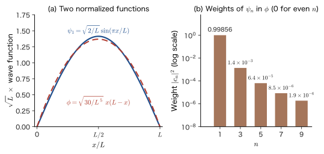
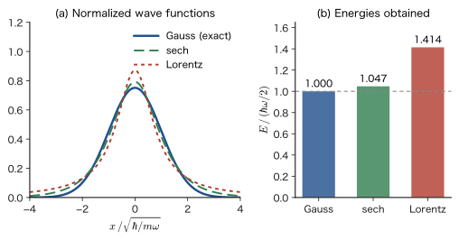
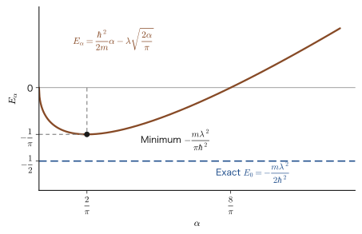
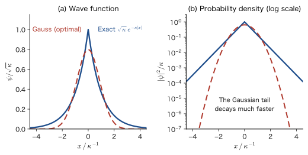
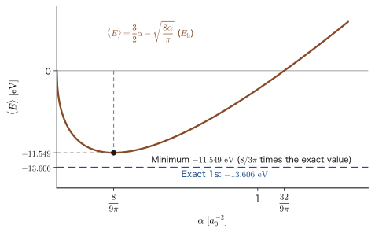

Chapter 30The Variational Principle — Searching for an Upper Bound on the Energy
Put a marble in a bowl, and no matter where you let go of it, it rolls down and finally comes to rest at the bottom of the bowl. In mechanics, the point of minimum potential energy is the stable equilibrium point (the principle of least action in AD 03, Chapter 44, Section 44.4 (in Japanese), was likewise an idea of the same form: “choose the path that makes some quantity a minimum”). In quantum mechanics too, the ground state of an atom or molecule is “the state of lowest energy.” If so, then by trying out various states of the electron (wave functions) and choosing the one with the lowest energy, we should be able to approach the ground state. What guarantees that this naive idea is correct is the subject of this chapter, the variational principle.
In a word, the variational principle says: “whatever function you use to compute the energy, the value will never be lower than the energy of the true ground state.” Therefore, among the functions we try, the one with the lower energy is closer to the true ground-state energy, and we obtain a clear guideline: “whoever gets the energy lower wins” (how close the wave function itself is to the true one is a separate matter; as we will see in Section 30.2, only the square of the error is reflected in the energy). The perturbation theory we learned in the previous part (Part V) was a method for solving a problem obtained by adding a “small deviation” to a “solvable problem.” The variational method needs neither a solvable problem nor a small deviation. We simply write down a function on a hunch, let it vary through a few parameters, and search for the point where the energy is a minimum. Moreover, the answer always lies above the true value. In exchange, the method itself does not tell us how large the error is. In this chapter, we prove this principle (Section 30.2), practice using it (Sections 30.3–30.5), and also check the situations in which it cannot be used (Section 30.6).
This principle is the foundation of present-day electronic-structure calculations for molecules and solids. Even for the helium atom, which has only two electrons, the Schrödinger equation cannot be solved analytically, and in a crystal of $N$ atoms the number of electrons is of the order of $10^{23}$. Replacing a problem that cannot be solved exactly by the procedure “choose a function and minimize the energy,” and thereby solving it approximately, is the starting point of the Hartree–Fock method and density functional theory (DFT).
Road map of this part. Part VI, “The Variational Principle,” consists of three chapters.
- Chapter 30 (this chapter): the statement and proof of the variational principle, how to choose a trial function, the two simplest practice problems (calculations that use a Gaussian function for the $\delta$-function potential and for the hydrogen atom), excited states, and the limitations of the variational principle.
- Chapter 31: solving the helium atom with a single parameter, the “effective nuclear charge” $Z'$ (this gives an interpretation of the shielding by the electrons). The linear variational method: if the trial function is taken to be a linear combination of basis functions, energy minimization becomes a matrix eigenvalue problem (the secular equation).
- Chapter 32: using Gaussian functions as building blocks of the trial function (STO-$n$G). The advantage is that the integrals can be done analytically; the drawback is that the shape near the origin does not match (foreshadowed by the hydrogen-atom example in this chapter).
The connection with the previous part (Part V, Chapter 27 through Chapter 29) is as follows. In perturbation theory, first-order perturbation gave the ground-state energy of helium as $-74.833\ \mathrm{eV}$, which deviated by about 5% from the experimental value $-79.005\ \mathrm{eV}$. With the variational method, even for the same helium, we can come closer to the experimental value by “optimizing the trial function itself” (Chapter 31). The Hartree–Fock method of the next part, Part VII (Chapter 33 onward), is the variational method on “trial functions in the form of a Slater determinant,” and the Roothaan–Hall equations of Chapter 37 are none other than the linear variational method (Chapter 31).
- The variational principle: the expectation value of the energy $\mel{\phi}{\hat{H}}{\phi}$ of any normalized trial function is at least the true ground-state energy $E_0$. The trial function, the Rayleigh quotient, and the four steps of the variational method
- Its proof: from the eigenfunction expansion $\ket{\phi}=\sum_k c_k\ket{\psi_k}$, we derive $\mel{\phi}{\hat{H}}{\phi}=\sum_k E_k\abs{c_k}^2\ge E_0$ without skipping a line. The meaning of Hermiticity, orthogonality, completeness, and projection
- The extension to unnormalized functions and the condition for equality; the fact that the error in the energy is affected only by the square of the error in the state; the fact that the stationarity condition is equivalent to the Schrödinger equation (the method of Lagrange multipliers)
- How to choose a trial function (boundary conditions, symmetry, nodes, asymptotic form, cusps), the virial theorem derived from scaling, and numerical examples for a box, a spherical quantum dot, and a harmonic oscillator
- Application of a Gaussian-type trial function to the $\delta$-function potential, comparison with the exact solution ($2/\pi=63.7\ \%$), and an application to a thin quantum well
- Application of a Gaussian-type trial function to the hydrogen atom ($\langle E\rangle_{\min}=\tfrac{8}{3\pi}\varepsilon_{1\mathrm{s}}=-11.549\ \mathrm{eV}$, about 15% higher than the exact solution), comparison with a Slater-type function, the cusp condition, and shallow donor levels
- Upper bounds for excited states (the orthogonality condition and symmetry), and the meaning of the fact that the variational principle gives only upper bounds
Needed later: the harmonic oscillator in this book (Chapter 13), the spherically symmetric well and quantum dots (Section 14.7), shielding (Chapter 18), and perturbation theory (Chapter 27). Mathematics: the inner product of functions (University Mathematics, Chapter 27, Section 27.2), eigenvalues and eigenvectors (Chapter 12, Section 12.1), expectation values (Chapter 14, Section 14.5), the method of Lagrange multipliers (Chapter 6, Section 6.7), the gamma function (Chapter 32, Section 32.2), and the Laplacian in spherical coordinates (Chapter 44, Section 44.4). Physics: the Euler–Lagrange equation of the calculus of variations (AD 03, Chapter 44, Section 44.5 (in Japanese)) and the method of Lagrange multipliers (Section 44.7 (in Japanese)). The exact solutions for the box, the harmonic oscillator, and the hydrogen atom used in the examples of this chapter were also treated, from the mathematical side, in the companion volume “University Mathematics”: Chapter 45, Section 45.3 (infinite well), Chapter 46, Section 46.2 (harmonic oscillator), Chapter 48, Section 48.1 (infinite spherical potential), and Section 48.3 (hydrogen atom) (Chapter 47 covers cylindrical coordinates and Bessel functions). In this chapter, we use them from the physics side as examples of trial functions.
Source notes: Yasuhide Mochizuki, “Physics Notes: Quantum Mechanics 3,” pp. 32–34.
30.1 What Is the Variational Principle? — Bounding an Unsolvable Problem from Above
30.1.1 Why do we need a method of “approximating without solving”?
The time-independent Schrödinger equation $\hat{H}\psi=E\psi$ can be solved exactly only in cases such as the box (Chapter 10), the harmonic oscillator (Chapter 13), and the hydrogen atom (Chapter 15), where there is a single particle and the potential is exceptionally simple. For the helium atom, which has two electrons, the coordinates of the two electrons become intertwined because of the Coulomb repulsion between them, $e_0^2/(4\pi\varepsilon_0\abs{\bm r_1-\bm r_2})$, and no analytic solution is known. In molecules and crystals, the number of electrons ranges from several tens to the order of $10^{23}$. We must give up on solving exactly, and we need a method that constructs approximate solutions skillfully.
The perturbation theory we learned in Part V started from a solvable problem $\hat{H}_0$ and accounted for the effect of a “small deviation” $\lambda\hat{V}$. However, the electron–electron repulsion in helium is somewhat too large to be called a “small deviation,” and first-order perturbation theory gave only $-74.833\ \mathrm{eV}$ (experimental value: $-79.005\ \mathrm{eV}$) (Chapter 29). Perturbation theory rests on the assumption that “a solvable problem lies nearby.” In contrast, the variational method can be used even when no solvable problem lies nearby. The idea is simple, and goes as follows.
- Without knowing the exact answer, write down a function $\phi$ of which we say “it is probably about this shape,” in a form that contains parameters.
- Use that function to compute the expectation value of the energy.
- Vary the parameters and look for the point where the expectation value is lowest.
What guarantees that this operation is one that “approaches the exact answer” is the following theorem. This method is also called the Rayleigh–Ritz variational method, because Rayleigh (Lord Rayleigh) used it as a method for estimating the frequencies of sounds and strings from above, and Walther Ritz (1908–09) refined it into a method for approximately solving general eigenvalue problems.
30.1.2 What the variational principle states
Theorem 30.1: Variational principle
Let $E_0$ be the lowest of the eigenvalues of the Hamiltonian $\hat{H}$ (the ground-state energy). For any normalized ($\braket{\phi}{\phi}=1$) function $\phi$ that satisfies the same boundary conditions as the eigenfunctions of $\hat{H}$, the expectation value of the energy is never lower than $E_0$:
\begin{equation} \mel{\phi}{\hat{H}}{\phi}\ \ge\ E_0 \label{eq:30-var} \end{equation}In other words, if we compute the energy using any wave function, the computed value is never lower than the true energy.
The “arbitrary” function in the theorem is, in an actual calculation, a function that we can write down freely. We therefore give it the following name.
Definition 30.1: Trial function
A function $\phi$ that we choose and use to compute the energy in the variational principle is called a trial function or a trial wave function. Unlike the true eigenfunction $\psi_k$, $\phi$ need not be a correct solution. Usually, we take a function whose form looks close to the exact answer and build into it parameters (variational parameters) $\alpha,\beta,\dots$ for adjusting its values.
The theorem has three assumptions hidden in it. (i) $\phi$ is normalized (the extension to functions that are not normalized is made in Section 30.2.4). (ii) $\phi$ satisfies the same boundary conditions as the eigenfunctions, and the energy expectation value $\mel{\phi}{\hat{H}}{\phi}$ is determined as a finite value (the function need not be smooth enough for $\hat{H}\phi$ to be computed as an ordinary function; see the Supplement in Section 30.3.1). (iii) $\hat{H}$ has a lowest eigenvalue $E_0$ (the energy is bounded below). In atomic and molecular problems that deal with bound states, these are satisfied.
Intuition: Why is it “the foundation of all molecular structure calculations”?
This principle underlies all modern molecular structure calculations. The reason is that it is difficult to solve the Schrödinger equation of a many-electron system exactly. The principle gives us the reassurance that “even if we do not know the exact solution, we may try any function we like; however, the value that comes out will always lie above the true value.” Even when the computed value is off, we can state flatly that “the true value lies below the value obtained,” so when we compare several approximations, we can judge that the one with the lower energy is the approximation closer to the true energy (the closeness of the wave function itself is a separate matter; as we will see in Section 30.2.5, the energy reflects only the square of the error). The structure of a molecule (the arrangement of its atoms) is also determined as the atomic configuration that minimizes the energy.
30.1.3 What are we doing when we write it as an integral? — the Rayleigh quotient
The energy expectation value $\mel{\phi}{\hat{H}}{\phi}$ is written in the Dirac notation introduced in Chapter 10, but its content is an integral. Table 30.1 summarizes the correspondence.
| Quantity | Dirac notation | Integral |
|---|---|---|
| Normalization | $\braket{\phi}{\phi}$ | $\displaystyle\int\phi^*\phi\,\dd\tau=\int\abs{\phi}^2\dd\tau$ |
| Energy expectation value | $\mel{\phi}{\hat{H}}{\phi}$ | $\displaystyle\int\phi^*\,\hat{H}\phi\,\dd\tau$ |
| Volume element $\dd\tau$ | One dimension: $\dd x$. One particle in three dimensions: $\dd^3r=r^2\sin\theta\,\dd r\,\dd\theta\,\dd\varphi$. $N$-electron system: $\dd^3r_1\cdots\dd^3r_N$ (including the sum over the spin variables) | |
So that we can also use it when the trial function is not normalized, we define the following quantity.
Definition 30.2: Rayleigh quotient (energy functional)
For a nonzero function $\phi$, the quantity
\begin{equation} E[\phi]\equiv\frac{\mel{\phi}{\hat{H}}{\phi}}{\braket{\phi}{\phi}} =\frac{\displaystyle\int\phi^*\,\hat{H}\phi\,\dd\tau}{\displaystyle\int\phi^*\phi\,\dd\tau} \label{eq:30-rayleigh} \end{equation}is called the Rayleigh quotient. When $\phi$ is normalized, the denominator is 1, so $E[\phi]=\mel{\phi}{\hat{H}}{\phi}$.
$E[\phi]$ is a correspondence in which giving one function $\phi$ determines one number (an energy). This kind of correspondence, with a function as input and a number as output, is called a functional (the “action” in AD 03, Chapter 44, Section 44.4 (in Japanese), was also a functional). The variational principle can be restated as follows: “the functional $E[\phi]$ takes its minimum value $E_0$ when $\phi$ is the ground-state function.”
Intuition: The energy of a mixture is an average, and an average never falls below the lowest value
The proof of Theorem 30.1 is given in the next section, but its content is like “mixing salt solutions.” If we mix several salt solutions of different concentrations, the concentration of the mixture is the average (weighted by amount) of the concentrations before mixing. Therefore the mixture is never more dilute than the most dilute solution, and never more concentrated than the most concentrated one. The trial function $\phi$ is a “mixture” of eigenstates (states of definite energy) $\psi_0,\psi_1,\psi_2,\dots$, and its energy expectation value is the average of the energies of the eigenstates weighted by the weights (the mixing proportions). The weights are nonnegative and add up to 1. Therefore the average never falls below the lowest energy $E_0$.
Example 30.1: The expectation value is a weighted average of the eigenvalues
Take the trial function of the hydrogen atom to be $\phi=\sqrt{0.90}\,\psi_{1\mathrm{s}}+\sqrt{0.07}\,\psi_{2\mathrm{s}}+\sqrt{0.03}\,\psi_{3\mathrm{s}}$ ($\psi_{n\mathrm{s}}$ is the normalized $ns$ orbital of the hydrogen atom). Find the energy expectation value $\mel{\phi}{\hat{H}}{\phi}$ and compare it with the ground-state energy $E_1=-13.606\ \mathrm{eV}$. Also explain why, however the weights $(0.90,\,0.07,\,0.03)$ are changed, the value never drops below $-13.606\ \mathrm{eV}$. The levels of the hydrogen atom are $E_n=-13.606\ \mathrm{eV}/n^2$.
Solution. The $\psi_{n\mathrm{s}}$ are mutually orthogonal (Section 16.7), and $\hat{H}\psi_{n\mathrm{s}}=E_n\psi_{n\mathrm{s}}$. Let the coefficients be $c_1=\sqrt{0.90}$, $c_2=\sqrt{0.07}$, and $c_3=\sqrt{0.03}$. Then $\braket{\phi}{\phi}=c_1^2+c_2^2+c_3^2=0.90+0.07+0.03=1$, so the function is normalized.
Multiplying $\hat{H}\phi=\sum_n c_nE_n\psi_{n\mathrm{s}}$ by $\bra{\phi}=\sum_m c_m\bra{\psi_{m\mathrm{s}}}$ and using $\braket{\psi_{m\mathrm{s}}}{\psi_{n\mathrm{s}}}=\delta_{mn}$, we obtain
$$ \mel{\phi}{\hat{H}}{\phi}=\sum_{m,n}c_mc_nE_n\delta_{mn}=\sum_n c_n^2E_n=0.90E_1+0.07E_2+0.03E_3 $$Substituting $E_1=-13.606$, $E_2=-13.606/4=-3.4015$, and $E_3=-13.606/9=-1.5118\ \mathrm{eV}$, we get
$$ \mel{\phi}{\hat{H}}{\phi}=0.90\times(-13.606)+0.07\times(-3.4015)+0.03\times(-1.5118)=-12.245-0.2381-0.04535=-12.529\ \mathrm{eV} $$This is $1.077\ \mathrm{eV}$ higher than $E_1=-13.606\ \mathrm{eV}$. This difference is equal to the sum, over the levels, of the height $E_n-E_1$ of each level above $E_1$ multiplied by its weight, $0.07\times(E_2-E_1)+0.03\times(E_3-E_1)=0.07\times10.2045+0.03\times12.094=0.7143+0.3628=1.077\ \mathrm{eV}$. The weights are nonnegative, and $E_n-E_1\ge0$, so every term is nonnegative, and the difference is nonnegative however the weights are changed. The difference is zero only when the weights of all the levels other than $E_1$ ($E_2,E_3$) are zero, that is, only when $\phi=\psi_{1\mathrm{s}}$.
30.1.4 The four steps of the variational method
An actual calculation using the variational principle always proceeds in the following four steps. All the examples in this chapter follow these steps.
- Choose a family of trial functions. Write a function $\phi(\alpha)$ containing a parameter $\alpha$ (for example, $e^{-\alpha x^2}$).
- Compute the energy as a function of the parameters. Evaluate $E(\alpha)=\mel{\phi_\alpha}{\hat{H}}{\phi_\alpha}/\braket{\phi_\alpha}{\phi_\alpha}$ by integration (the normalization constant drops out here).
- Find the minimum. Solve $\dd E/\dd\alpha=0$ and find the $\alpha_{\min}$ at which $E(\alpha)$ attains its minimum (also check that the second derivative is positive).
- Read it as an upper bound. $E(\alpha_{\min})$ is an upper bound on the energy $E_0$ of the true ground state: $E_0\le E(\alpha_{\min})$.
Caution: The variational method does not tell us the size of the error
The only conclusion obtained in Step 4 is the inequality “$E_0$ is lower than this value”; it does not tell us “how much lower.” Whether $E(\alpha_{\min})$ is within 0.1% of $E_0$ or 40% away from it can be known only when the exact solution is known separately (in the examples of this chapter, we find the exact solution by another method and compare). If we enlarge the family of trial functions (increase the number of parameters), the energy stays the same or goes lower, so as a “measure of the quality of the calculation” we look at whether the energy hardly decreases any further when more parameters are added (convergence). This is shown schematically in Figure 30.2.
30.1.5 Road map: The descendants of the variational principle
Much of the rest of this book consists of “descendants” of the variational principle.
- Hartree–Fock method (Part VII): restrict the many-electron trial function to the form of a Slater determinant $\Phi$, and find the orbitals that minimize $E[\Phi]$ within that form. The Hartree–Fock equations follow from the minimization condition (the method of Lagrange multipliers, Section 30.2.6) (Chapter 36).
- Basis-function expansion and the linear variational method: take the trial function to be a linear combination of basis functions $\phi=\sum_i c_i\phi_i$ and optimize the coefficients $c_i$. This leads to the secular equation (Chapter 31) and becomes the standard calculation method of quantum chemistry (the Roothaan–Hall equations of Chapter 37). Gaussian functions are often used as basis functions (Chapter 32).
- Density functional theory: the Hohenberg–Kohn variational principle, which states that the ground-state energy is a functional $E[\rho]$ of the electron density $\rho(\bm r)$ and is minimized at the true density (Chapter 9 (in Japanese) of the companion volume “Density Functional Theory (AD 07)”).
- Tight-binding band calculation: write the electronic states of a crystal as linear combinations of atomic orbitals and determine the coefficients variationally (Contents (in Japanese) of the companion volume “Solid-State Physics (AD 06)”).
The same content, seen from the side of computational materials science, is found in Chapter 3 of the companion volume “Computational Materials Science (AD 05).” Related simulator: The Variational Principle (Comparison of Effective Nuclear Charges and Trial Functions).
30.2 Proof of the Variational Principle — Expanding in Eigenfunctions
In this section we prove Theorem 30.1. All we need are three properties of the eigenfunctions of $\hat{H}$ (real eigenvalues, orthogonality, and completeness). After that, we show the extension to functions that are not normalized, the condition under which equality holds, the fact that the error in the energy is the square of the error in the state, and the fact that “minimum energy” and the Schrödinger equation are one and the same thing.
30.2.1 Preparation: Properties of the eigenfunctions of $\hat{H}$
We number the solutions of the eigenvalue problem of $\hat{H}$ (the time-independent Schrödinger equation) in order of increasing energy and write them as
\begin{equation} \hat{H}\psi_k=E_k\psi_k\quad(k=0,1,2,\dots),\qquad E_0\le E_1\le E_2\le\cdots\le E_k\le\cdots \label{eq:30-eigen} \end{equation}Here the numbering follows the convention of the general theory and starts from $k=0$, so that $k=0$ is the ground state. The equality in the inequality sign $\le$ is there to include distinct states that have the same energy (degeneracy, Chapter 10, Section 10.3). In Dirac notation we also write $\psi_k$ as $\ket{\psi_k}$.
Derivation: Because $\hat{H}$ is a Hermitian operator, $E_k$ is real and the $\psi_k$ form an orthonormal system
The Hamiltonian $\hat{H}$ is a Hermitian operator (Section 9.6). For any functions $f,g$ we have $\mel{f}{\hat{H}}{g}=\braket{\hat{H}f}{g}$ ($\hat{H}$ may be made to act on the function on the left). From this, the following two facts follow.
(1) The eigenvalues are real. With $f=g=\psi_k$, the left-hand side is $\mel{\psi_k}{\hat{H}}{\psi_k}=E_k\braket{\psi_k}{\psi_k}$. The right-hand side is $\braket{\hat{H}\psi_k}{\psi_k}=\braket{E_k\psi_k}{\psi_k}=E_k^*\braket{\psi_k}{\psi_k}$ (a constant inside the bra acquires a complex conjugate). Therefore $E_k\braket{\psi_k}{\psi_k}=E_k^*\braket{\psi_k}{\psi_k}$. Since $\braket{\psi_k}{\psi_k}=\int\abs{\psi_k}^2\dd\tau\gt0$, we have $E_k=E_k^*$; that is, $E_k$ is real.
(2) Eigenfunctions with different eigenvalues are orthogonal. Suppose $E_n\ne E_k$. With $f=\psi_n,\ g=\psi_k$, the left-hand side is $E_k\braket{\psi_n}{\psi_k}$ and the right-hand side is $E_n^*\braket{\psi_n}{\psi_k}=E_n\braket{\psi_n}{\psi_k}$. Hence $(E_k-E_n)\braket{\psi_n}{\psi_k}=0$, and from $E_k\ne E_n$ we obtain $\braket{\psi_n}{\psi_k}=0$. Degenerate eigenfunctions with the same eigenvalue can be re-chosen to be orthogonal, because any linear combination of them is again an eigenfunction with the same eigenvalue. Concretely, if two normalized eigenfunctions $f,g$ with the same eigenvalue are not orthogonal, we construct $g'=g-f\braket{f}{g}$ (we subtract from $g$ its component along $f$. This is the same operation as subtracting from a vector its projection onto another vector, and it is called Gram–Schmidt orthogonalization). The function $g'$ is an eigenfunction with the same eigenvalue, and because $\braket{f}{g'}=\braket{f}{g}-\braket{f}{f}\braket{f}{g}=0$, it is orthogonal to $f$ (for the general theory of inner products of functions, see University Mathematics, Chapter 27, Section 27.2). After normalizing each function, in the end all the eigenfunctions can be chosen so that they satisfy
\begin{equation} \braket{\psi_n}{\psi_k}=\delta_{nk}\equiv\begin{cases}1&(n=k)\\0&(n\ne k)\end{cases} \label{eq:30-orth} \end{equation}Here $\delta_{nk}$ is the Kronecker delta.
∎
From Eq. \eqref{eq:30-orth} and the eigenvalue equation \eqref{eq:30-eigen}, the following important relation follows. In $\hat{H}\ket{\psi_k}=E_k\ket{\psi_k}$, the factor $E_k$ on the right-hand side is merely a number, so it can be taken out of the inner product:
\begin{equation} \mel{\psi_n}{\hat{H}}{\psi_k}=E_k\braket{\psi_n}{\psi_k}=E_k\,\delta_{nk} \label{eq:30-Hdiag} \end{equation}That is, if we take the eigenfunctions as the basis, only the diagonal elements remain among the “matrix elements” of the Hamiltonian, and their values are the eigenvalues.
Intuition: What is completeness?
Another property is completeness. To say that “the set $\{\psi_k\}$ of eigenfunctions of $\hat{H}$ forms a complete set” means that $\{\psi_k\}$ has no gaps, so that any function $\phi$ satisfying the same boundary conditions as the $\psi_k$ can be expressed as a linear combination of the $\psi_k$. This is the infinite-dimensional version of the fact that any vector $\bm{v}$ in three-dimensional space can be expressed, using three mutually orthogonal unit vectors $\bm{e}_x,\bm{e}_y,\bm{e}_z$, as $\bm{v}=(\bm{e}_x\cdot\bm{v})\bm{e}_x+(\bm{e}_y\cdot\bm{v})\bm{e}_y+(\bm{e}_z\cdot\bm{v})\bm{e}_z$. Written with kets, this reads
\begin{equation} \sum_k\ket{\psi_k}\bra{\psi_k}=1 \label{eq:30-complete} \end{equation}The $1$ on the right-hand side is the identity operator, which returns any ket it acts on unchanged. Each term $\ket{\psi_k}\bra{\psi_k}$ on the left-hand side is an operator (a projection operator) that, when it acts on a ket $\ket{\phi}$, gives $\ket{\psi_k}\braket{\psi_k}{\phi}$; that is, it picks out only “the $\psi_k$ component of $\phi$.” Adding up all the components restores the original, and this is the meaning of Eq. \eqref{eq:30-complete}.
Completeness is in general a property that requires proof, but for atoms, molecules, and quantum wells, where we deal with bound states, we proceed on the assumption that it holds (it nearly always holds).
30.2.2 Expanding an arbitrary function in eigenfunctions — projection
By completeness \eqref{eq:30-complete}, any function $\ket{\phi}$ satisfying the same boundary conditions as the $\psi_k$ can be expressed as a linear combination of the $\ket{\psi_k}$:
\begin{equation} \ket{\phi}=\sum_k\ket{\psi_k}\,c_k=\sum_k\ket{\psi_k}\,\braket{\psi_k}{\phi},\qquad c_k=\braket{\psi_k}{\phi} \label{eq:30-expand} \end{equation}The second equality, that is, the fact that the coefficient is $c_k=\braket{\psi_k}{\phi}$, can be checked as follows. Multiplying both sides of the expansion $\ket{\phi}=\sum_k c_k\ket{\psi_k}$ from the left by $\bra{\psi_n}$ and using orthogonality \eqref{eq:30-orth}, we obtain
$$ \braket{\psi_n}{\phi}=\sum_kc_k\braket{\psi_n}{\psi_k}=\sum_kc_k\delta_{nk}=c_n $$In the last equality, only the $k=n$ term remained. This $c_k$ is called the projection of $\phi$ onto $\psi_k$. In the vector example, $c_x=\bm{e}_x\cdot\bm{v}$ is the length obtained by projecting the vector $\bm{v}$ onto the $x$ axis (casting a “shadow” on the $x$ axis). In the same way, $c_k$ expresses how much of the eigenfunction $\psi_k$ is contained in the function $\phi$.
For the bra, we take the complex conjugate of the expansion coefficients. Since $c_k^*=\braket{\psi_k}{\phi}^*=\braket{\phi}{\psi_k}$ (the property of the inner product in Section 10.2.2), the conjugated $\bra{\phi}$ becomes the following.
\begin{equation} \bra{\phi}=\sum_kc_k^*\bra{\psi_k}=\sum_k\braket{\phi}{\psi_k}\bra{\psi_k} \label{eq:30-expand-bra} \end{equation}30.2.3 Proof
Now that we are prepared, we prove Theorem 30.1. What must be shown mathematically is that, for a normalized $\phi$, $\mel{\phi}{\hat{H}}{\phi}\ge E_0$ holds.
Proof: Theorem 30.1 (the variational principle)
[i] Write the normalization condition in terms of the expansion coefficients. We have $\braket{\phi}{\phi}=1$. Substituting Eq. \eqref{eq:30-expand-bra} (with the summation index called $j$) for the left $\bra{\phi}$ and Eq. \eqref{eq:30-expand} (with the summation index called $k$) for the right $\ket{\phi}$, we obtain
$$ \braket{\phi}{\phi}=\sum_{j,k}\braket{\phi}{\psi_j}\,\braket{\psi_j}{\psi_k}\,\braket{\psi_k}{\phi} =\sum_{j,k}\braket{\phi}{\psi_j}\,\delta_{jk}\,\braket{\psi_k}{\phi} $$Here we used orthogonality \eqref{eq:30-orth}. Since $\delta_{jk}$ is 0 except when $k=j$, only the $k=j$ term remains in the sum over $k$, and the double sum becomes a single sum:
\begin{equation} 1=\braket{\phi}{\phi}=\sum_j\braket{\phi}{\psi_j}\braket{\psi_j}{\phi}=\sum_j\abs{\braket{\psi_j}{\phi}}^2=\sum_j\abs{c_j}^2 \label{eq:30-normsum} \end{equation}Along the way we used $\braket{\phi}{\psi_j}=\braket{\psi_j}{\phi}^*$, writing $z^*z=\abs{z}^2$. This shows that the $\abs{c_j}^2$ add up to 1 (they are weights).
[ii] Write the energy expectation value in terms of the expansion coefficients. Using the same expansion for $\mel{\phi}{\hat{H}}{\phi}$, we obtain
\begin{equation} \mel{\phi}{\hat{H}}{\phi}=\sum_{j,k}\braket{\phi}{\psi_j}\,\mel{\psi_j}{\hat{H}}{\psi_k}\,\braket{\psi_k}{\phi} =\sum_{j,k}\braket{\phi}{\psi_j}\,E_k\delta_{jk}\,\braket{\psi_k}{\phi} =\sum_jE_j\,\abs{\braket{\psi_j}{\phi}}^2=\sum_jE_j\abs{c_j}^2 \label{eq:30-Esum} \end{equation}In the second equality we used Eq. \eqref{eq:30-Hdiag} ($\mel{\psi_j}{\hat{H}}{\psi_k}=E_k\delta_{jk}$), and in the third equality we used the fact that the terms other than $k=j$ vanish. (If, by the Hermiticity of $\hat{H}$, we let $\hat{H}$ act on the left-hand $\bra{\psi_j}$, then $\mel{\psi_j}{\hat{H}}{\phi}=E_j\braket{\psi_j}{\phi}$, so we can write directly $\mel{\phi}{\hat{H}}{\phi}=\sum_j\braket{\phi}{\psi_j}E_j\braket{\psi_j}{\phi}$. With this way of writing, there is no need to let $\hat{H}$ act on the expanded $\phi$ term by term in the infinite sum, and the proof holds even if $\hat{H}\phi$ is not an ordinary function.)
[iii] The inequality. All the eigenvalues satisfy $E_j\ge E_0$, and the weights $\abs{c_j}^2$ are nonnegative. Therefore $E_j\abs{c_j}^2\ge E_0\abs{c_j}^2$ for each term, and summing these and using Eq. \eqref{eq:30-normsum} from [i], we obtain
$$ \mel{\phi}{\hat{H}}{\phi}=\sum_jE_j\abs{c_j}^2\ \ge\ E_0\sum_j\abs{c_j}^2=E_0 $$This is what was to be proved.
∎
Intuition: Seeing the double sum collapse with three levels
The step in Eq. \eqref{eq:30-Esum} where “the double sum becomes a single sum” is easy to stumble over at first, so suppose that there are only three eigenstates $\psi_0,\psi_1,\psi_2$ ($j,k=0,1,2$) and write out all the terms. The double sum has $3\times3=9$ terms, and arranging the coefficients turns it into a matrix product:
$$ \mel{\phi}{\hat{H}}{\phi}=\begin{pmatrix}c_0^*&c_1^*&c_2^*\end{pmatrix} \begin{pmatrix}\mel{\psi_0}{\hat{H}}{\psi_0}&\mel{\psi_0}{\hat{H}}{\psi_1}&\mel{\psi_0}{\hat{H}}{\psi_2}\\ \mel{\psi_1}{\hat{H}}{\psi_0}&\mel{\psi_1}{\hat{H}}{\psi_1}&\mel{\psi_1}{\hat{H}}{\psi_2}\\ \mel{\psi_2}{\hat{H}}{\psi_0}&\mel{\psi_2}{\hat{H}}{\psi_1}&\mel{\psi_2}{\hat{H}}{\psi_2}\end{pmatrix} \begin{pmatrix}c_0\\c_1\\c_2\end{pmatrix} =\begin{pmatrix}c_0^*&c_1^*&c_2^*\end{pmatrix} \begin{pmatrix}E_0&0&0\\0&E_1&0\\0&0&E_2\end{pmatrix} \begin{pmatrix}c_0\\c_1\\c_2\end{pmatrix} $$By Eq. \eqref{eq:30-Hdiag}, of the nine elements of the matrix, all but the three on the diagonal are 0. If we choose the eigenfunctions as the basis, the Hamiltonian becomes a diagonal matrix, and for the vector $(c_0,c_1,c_2)^{\mathrm{T}}$ of expansion coefficients arranged in a column, it gives only the three terms $E_0\abs{c_0}^2+E_1\abs{c_1}^2+E_2\abs{c_2}^2$. Under the normalization condition $\abs{c_0}^2+\abs{c_1}^2+\abs{c_2}^2=1$, this is the average of $E_0,E_1,E_2$ with the weights $\abs{c_j}^2$, and it cannot possibly be smaller than the lowest value, $E_0$.
Discussion: “Obvious in hindsight”
Once we have finished reading the proof, the variational principle looks obvious. Indeed, $\abs{c_j}^2$ is the probability that the value $E_j$ is obtained when the energy is measured in the state $\phi$ (Chapter 8, Section 8.3). Therefore $\mel{\phi}{\hat{H}}{\phi}=\sum_jE_j\abs{c_j}^2$ is nothing other than the mean value (expectation value) of the results of energy measurements. The values that come out of a measurement are always one of the eigenvalues, so their average cannot fall below the smallest eigenvalue, $E_0$. It is just the statement that “an average cannot be smaller than the minimum value.”
30.2.4 Unnormalized functions and the condition for equality
In actual calculations it is often a nuisance to write a normalized function from the start (for example, the normalization constant of $e^{-\alpha x^2}$ depends on $\alpha$). So we check that the same claim can be made for functions that are not normalized, by means of the Rayleigh quotient, Eq. \eqref{eq:30-rayleigh}.
Theorem 30.2: The variational principle for unnormalized functions and the condition for equality
For any nonzero function $\phi$ satisfying the same boundary conditions as the $\psi_k$,
\begin{equation} E[\phi]=\frac{\mel{\phi}{\hat{H}}{\phi}}{\braket{\phi}{\phi}}\ \ge\ E_0 \label{eq:30-var-unnorm} \end{equation}holds. Equality holds if and only if $\phi$ is (a constant multiple of) an eigenfunction with eigenvalue $E_0$.
Proof
Even if we replace $\phi$ by the normalized function $\phi/\sqrt{\braket{\phi}{\phi}}$, the form of $\phi$ does not change; apart from a constant multiple it is the same function. Applying Theorem 30.1 to this normalized function, we obtain $\mel{\phi}{\hat{H}}{\phi}/\braket{\phi}{\phi}\ge E_0$. To look in more detail, we redo the calculations of Eqs. \eqref{eq:30-normsum} and \eqref{eq:30-Esum} without normalizing; using $c_j=\braket{\psi_j}{\phi}$, we obtain $\braket{\phi}{\phi}=\sum_j\abs{c_j}^2$ and $\mel{\phi}{\hat{H}}{\phi}=\sum_jE_j\abs{c_j}^2$ (the calculations in [i] and [ii] do not use the normalization condition). Therefore
\begin{equation} E[\phi]-E_0=\frac{\sum_jE_j\abs{c_j}^2}{\sum_j\abs{c_j}^2}-E_0=\frac{\sum_j(E_j-E_0)\abs{c_j}^2}{\sum_j\abs{c_j}^2} \label{eq:30-excess} \end{equation}The denominator is positive. Each term of the numerator is nonnegative, because $E_j-E_0\ge0$ and $\abs{c_j}^2\ge0$. Hence $E[\phi]-E_0\ge0$. Equality holds exactly when all the terms of the numerator are 0, that is, when $c_j=0$ for every $j$ with $E_j\gt E_0$. This means that $\phi$ is a superposition of only those eigenfunctions that have the eigenvalue $E_0$; that is, that $\phi$ itself is an eigenfunction with eigenvalue $E_0$. If the ground state is not degenerate, then $\phi=c_0\psi_0$ (a constant multiple of $\psi_0$).
∎
30.2.5 The energy error is the square of the state error
Eq. \eqref{eq:30-excess} tells us one more important thing. Let $\varepsilon$ be the magnitude of the part of the trial function that is not the ground state $\psi_0$ (the error component), and, when $\phi$ is normalized, write $\abs{c_0}^2=1-\varepsilon^2$ and $\sum_{k\ge1}\abs{c_k}^2=\varepsilon^2$. Then Eq. \eqref{eq:30-excess} becomes
\begin{equation} E[\phi]-E_0=\sum_{k\ge1}\abs{c_k}^2\,(E_k-E_0)\ \ge\ (E_1-E_0)\,\varepsilon^2 \label{eq:30-err2} \end{equation}(the $k=0$ term vanishes because $E_0-E_0=0$). The inequality follows from $E_k-E_0\ge E_1-E_0$ ($k\ge1$). The energy error $E[\phi]-E_0$ is proportional to the first power of $\abs{c_k}^2$, and $\abs{c_k}^2$ is the square of the amplitude $c_k$ of the error component. The right-hand side of Eq. \eqref{eq:30-err2} shows that the energy difference is proportional to $\varepsilon^2$. That is, when the error (amplitude) of the wave function is $\varepsilon$, the energy error is only about the level spacing $E_k-E_0$ multiplied by $\varepsilon^2$. For example, even if the trial function contains a 10% error component ($\varepsilon=0.1$), the energy error is only about $\varepsilon^2=1\ \%$ of the level spacing (for the harmonic oscillator of Example 30.2, the spacing $E_2-E_0=2\hbar\omega$ is as much as four times $E_0=\hbar\omega/2$, so relative to $E_0$ the error comes to about 4%). Reading Eq. \eqref{eq:30-err2} in reverse gives $\varepsilon^2\le\dfrac{E[\phi]-E_0}{E_1-E_0}$, so we can say that if the energy is close to $E_0$, the state is close as well, but the state error $\varepsilon$ can be bounded only by the square root of the energy error. The reason the energy agrees so well in the variational method, and the caveat that goes with it, can be summarized in the following two points.
- The rate at which the energy error becomes smaller is the square of the wave-function error. Even if the wave function is slightly off, the energy does not change much.
- Conversely, even if the energy is correct to 1%, the shape of the wave function may be off by 10%. Physical quantities other than the energy (the electron density at the position of the atomic nucleus $\abs{\psi(0)}^2$, the dipole moment, $\expval{r}$, and so on) are affected at first order in the error component $c_k$ (through the cross term with the ground state, $2\,\mathrm{Re}(c_0^*c_k\mel{\psi_0}{\hat{A}}{\psi_k})$), so their errors are larger than that of the energy. We will see this concretely for the hydrogen atom in Section 30.5.
Example 30.2: Seeing that the error is second order in the harmonic oscillator (practice with the Rayleigh quotient)
Let $\psi_n$ ($E_n=(n+\tfrac12)\hbar\omega$) be the eigenfunctions of the one-dimensional harmonic oscillator (Chapter 13). For the unnormalized trial function $\phi=\psi_0+c\,\psi_2$ ($c$ is real; after normalization the fraction of the error component is $\varepsilon^2=c^2/(1+c^2)$, which corresponds to $\varepsilon$ in Section 30.2.5), find the Rayleigh quotient $E[\phi]$. For $c=0.1$ and $c=0.05$, find the energy error $E[\phi]-E_0$ and the state error $1-\abs{\braket{\psi_0}{\phi}}^2/\braket{\phi}{\phi}$, and state what happens to the errors when $c$ is halved.
Solution. Since $\psi_0$ and $\psi_2$ are orthogonal and normalized, $\braket{\phi}{\phi}=\braket{\psi_0}{\psi_0}+c^2\braket{\psi_2}{\psi_2}=1+c^2$ (the cross term $c\braket{\psi_0}{\psi_2}$ is 0). For the numerator of the energy, since $\hat{H}\phi=E_0\psi_0+c E_2\psi_2$, we have $\mel{\phi}{\hat{H}}{\phi}=E_0+c^2E_2$. Substituting $E_0=\tfrac12\hbar\omega$ and $E_2=\tfrac52\hbar\omega$, we obtain
$$ E[\phi]=\frac{E_0+c^2E_2}{1+c^2}=\frac{\tfrac12+\tfrac52c^2}{1+c^2}\,\hbar\omega $$The energy error is $E[\phi]-E_0=\dfrac{E_0+c^2E_2}{1+c^2}-E_0=\dfrac{c^2(E_2-E_0)}{1+c^2}=\dfrac{2c^2}{1+c^2}\hbar\omega$. The projection onto the ground state is $\braket{\psi_0}{\phi}=1$, so the state error is $1-\dfrac{1}{1+c^2}=\dfrac{c^2}{1+c^2}$, which is exactly $\varepsilon^2$ in Section 30.2.5 (in this case Eq. \eqref{eq:30-err2} holds with equality, and the energy error $=\varepsilon^2(E_2-E_0)$).
For $c=0.1$: $E[\phi]=\dfrac{0.5+0.025}{1.01}\hbar\omega=0.5198\,\hbar\omega$ ($3.96$% higher than $E_0$). The state error is $\dfrac{0.01}{1.01}=0.0099$. For $c=0.05$: $E[\phi]=\dfrac{0.5+0.00625}{1.0025}\hbar\omega=0.5050\,\hbar\omega$ ($0.998$% higher), and the state error is $\dfrac{0.0025}{1.0025}=0.00249$. When $c$ is halved, both errors become approximately $1/4$ as large ($3.96\to0.998$, $0.0099\to0.00249$). This confirms that they are proportional to the square of the amplitude $c$ of the mixed-in component.
30.2.6 The converse: Minimizing the energy and the Schrödinger equation are the same thing
Theorem 30.1 asserted that “the minimum value of $E[\phi]$ is at least $E_0$.” Conversely, the statement “a function that makes $E[\phi]$ minimum (or stationary) is a solution of the Schrödinger equation” also holds. This is the form that is used directly when we derive the Hartree–Fock equations. The problem of minimizing $\mel{\phi}{\hat{H}}{\phi}$ while keeping the normalization condition $\braket{\phi}{\phi}=1$ can be solved by the method of Lagrange multipliers (University Mathematics, Chapter 6, Section 6.7, AD 03 Chapter 44, Section 44.7 (in Japanese)).
Derivation: Deriving $\hat{H}\phi=E\phi$ from the stationarity condition on $\mel{\phi}{\hat{H}}{\phi}$
To make $\mel{\phi}{\hat{H}}{\phi}$ stationary under the condition $\braket{\phi}{\phi}-1=0$, we introduce a Lagrange multiplier $E$ and set
$$ F[\phi]\equiv\mel{\phi}{\hat{H}}{\phi}-E\bigl(\braket{\phi}{\phi}-1\bigr) $$“Differentiate” this with respect to $\phi$ and set the result equal to 0. We compute the change $\delta F$ of $F$ when $\phi$ is changed to $\phi+\delta\phi$ ($\delta\phi$ is a small function that satisfies the boundary conditions), up to first order in $\delta\phi$:
$$ \delta F=\mel{\delta\phi}{\hat{H}}{\phi}+\mel{\phi}{\hat{H}}{\delta\phi}-E\Bigl(\braket{\delta\phi}{\phi}+\braket{\phi}{\delta\phi}\Bigr) =\braket{\delta\phi}{(\hat{H}-E)\phi}+\braket{(\hat{H}-E)\phi}{\delta\phi} $$Here we have dropped the second-order terms such as $\mel{\delta\phi}{\hat{H}}{\delta\phi}$, and we have used the Hermiticity of $\hat{H}$, which gives $\mel{\phi}{\hat{H}}{\delta\phi}=\braket{\hat{H}\phi}{\delta\phi}$, together with the fact that $E$ is real. If $\phi$ is at a stationary point, $\delta F=0$ must hold for every $\delta\phi$. Since the allowed $\delta\phi$ are sufficiently abundant (the fundamental lemma of the calculus of variations), even if $(\hat{H}-E)\phi$ itself does not satisfy the boundary conditions, we can take a $\delta\phi$ that approximates it as closely as we like. So we set $\delta\phi=\eta\,(\hat{H}-E)\phi$ ($\eta$ is a small positive real number). Then we find
$$ \delta F=2\eta\,\braket{(\hat{H}-E)\phi}{(\hat{H}-E)\phi}=2\eta\int\abs{(\hat{H}-E)\phi}^2\dd\tau=0 $$Since the integrand is nonnegative, the integral vanishes only when $(\hat{H}-E)\phi=0$ everywhere. That is, we obtain
\begin{equation} \hat{H}\phi=E\phi \label{eq:30-stationary} \end{equation}A stationary function is a solution of the Schrödinger equation, and the Lagrange multiplier $E$ turns out to be the eigenvalue (the energy). Indeed, multiplying Eq. \eqref{eq:30-stationary} from the left by $\bra{\phi}$ gives $\mel{\phi}{\hat{H}}{\phi}=E\braket{\phi}{\phi}=E$.
∎
This result teaches us that the stationary points of the energy functional $E[\phi]$ are all the eigenfunctions of $\hat{H}$. The minimum is the ground state $\psi_0$ ($E_0$), and the excited states $\psi_1,\psi_2,\dots$ are saddle points (points where the function rises in some directions and falls in others), neither local minima nor maxima. Indeed, if we carry out the same calculation as in Eq. \eqref{eq:30-excess} for $\phi=\psi_n+\delta\phi$, $E[\phi]-E_n$ consists only of terms proportional to the square of the components of $\delta\phi$ (because the $\psi_n$ component is about 1 and the other components are small), so there is no first-order change, and we can confirm that this is a stationary point. However, for $n\ge1$ the sign of $E_k-E_n$ is negative for $k\lt n$ and positive for $k\gt n$, so the sign of the second-order terms changes with the direction. This is the meaning of a saddle point. In the sense that the Schrödinger equation can be replaced by “the problem of finding the function that makes the energy stationary,” this has the same structure as the fact that, in mechanics, the equation of motion could be replaced by “the problem of finding the path along which the action is stationary” (AD 03 Chapter 44, Section 44.5 (in Japanese)). Related simulator: The Method of Lagrange Multipliers (From Constrained Minimization to the Secular Equation).
Supplement: Degeneracy and the continuous spectrum
Even when the ground state is degenerate, the statements and proofs of Theorems 30.1 and 30.2 hold as they are (we need only re-choose the degenerate eigenfunctions so that they are orthogonal). Also, when $\hat{H}$ has a continuous spectrum (unbound scattering states), $\mel{\phi}{\hat{H}}{\phi}\ge E_0$ holds in the same form if we replace the sum $\sum_k$ in the expansion with a sum over the bound states plus an integral over the continuous part ($E_0$ is the lowest value of the entire spectrum). We check this in Exercise 30.1.
30.3 How to Choose a Trial Function, and the Variational Method in Practice
30.3.1 What makes a “good” trial function
Theorem 30.1 says that “any function may be chosen,” but the quality of the result differs greatly depending on the choice. How to choose the trial function is left to the researcher, and this is where physical insight shows. We list some empirical guidelines.
- Satisfy the boundary conditions. Always satisfy the boundary conditions that the trial function must obey (vanishing at the walls of a box, approaching 0 at infinity so that it can be normalized, and so on). A function that does not satisfy them makes a singular term, such as a $\delta$ function at the position of the wall, appear in $\hat{H}\phi$, and the premise of Theorem 30.1 breaks down. For example, the constant function $\phi=1$ inside a box ($0\le x\le L$) has $\phi''=0$, so the kinetic energy is 0 and $E=0$, which gives an “answer” lower than the correct value $E_1=\pi^2\hbar^2/(2mL^2)\gt0$ (the states of a box are counted as $n=1,2,\dots$, so the ground-state energy is written $E_1$; Section 30.3.3). This happens because the boundary conditions are violated.
- Match the symmetry. Choose a function with the same symmetry (parity, angular momentum, spin) as the target state. The ground state of a left–right symmetric potential is an even function, and the ground state of an atom (an $s$ state) is a spherically symmetric function. If the symmetry is matched, good results are obtained even with a small number of parameters.
- Match the number of nodes. The ground state of a single particle has no nodes (interior points where $\psi=0$). If a function with nodes is used as the trial function, it is pulled toward the excited states and gives a higher energy (Section 30.6).
- Match the asymptotic form (behavior at large distances). A bound state with energy $E\lt0$ decays exponentially, as $\psi\propto e^{-\kappa r}$ ($\kappa=\sqrt{2m\abs{E}}/\hbar$), far away where the potential approaches 0. On the other hand, when the potential rises as $x^2$ at large distances, as for a harmonic oscillator, the function decays like a Gaussian function $e^{-\alpha x^2}$. If the shape of the tail differs from the correct one, the energy is raised unnecessarily by the amount of the contribution from large distances (Sections 30.3.5 and 30.4).
- Match the cusp at the position of the nucleus. Because the Coulomb potential becomes $-1/r\to-\infty$ at the position of the nucleus, the correct wave function has a “bent” cusp at the position of the nucleus (Section 30.5.5).
- Give the parameters a physical meaning. If we choose parameters whose values can be interpreted, such as the “effective nuclear charge” $Z'$ (Chapter 31), the results obtained lead to a physical understanding (such as the shielding by the electrons).
Supplement: The expectation value can be defined even for a trial function with a cusp
The function $e^{-\beta\abs{x}}$, which has a kink at the origin (Exercise 30.3), and the three-dimensional Slater-type function $e^{-\beta r}$ (Example 30.7) have a $\delta$ function in $\phi''$ at the origin, so $\hat{H}\phi$ is not an ordinary function. Even so, from the Hermiticity of $\hat{T}=-\dfrac{\hbar^2}{2m}\nabla^2$ (the boundary terms vanish on integration by parts), the expectation value of the kinetic energy can be written as
$$ \mel{\phi}{\hat{T}}{\phi}=\frac{\hbar^2}{2m}\int\abs{\nabla\phi}^2\dd\tau $$The right-hand side has a definite value as long as the first derivative of $\phi$ is square-integrable (a kink is merely a jump in the first derivative). Therefore, Theorem 30.1 can be used for functions with cusps as well. Premise (ii) should be read, in this sense, as “the energy expectation value is finite and well defined.” The boundary conditions (vanishing at the walls of a box, and so on), however, are a separate matter. If they are violated, the right-hand side above no longer gives the true expectation value (the example of $\phi=1$).
Supplement: Nonlinear parameters and linear parameters
There are two kinds of variational parameters. A parameter that enters the function nonlinearly, such as the exponent $\alpha$ of a Gaussian function ($e^{-\alpha x^2}$) or the effective nuclear charge $Z'$, is determined by minimizing $E(\alpha)$ numerically, or by solving $\dd E/\dd\alpha=0$. This is the case in this chapter and in the first half of Chapter 31. In contrast, when the trial function is written as a linear combination $\phi=\sum_ic_i\phi_i$ of basis functions $\phi_i$, the coefficients $c_i$ are linear parameters. Since $E$ is then a quadratic form in the $c_i$ (numerator) divided by a quadratic form (denominator), the minimization reduces to a matrix eigenvalue problem (the secular equation; the second half of Chapter 31).
30.3.2 Scaling and the virial theorem
If we add to the trial function a scaling parameter $\eta$ that stretches or shrinks the whole function, the virial theorem follows from the variational principle. Consider a one-particle system in three dimensions. For a function $\psi(\bm{r})$, consider the scaled function
\begin{equation} \psi_\eta(\bm{r})=\eta^{3/2}\,\psi(\eta\bm{r})\qquad(\eta\gt0) \label{eq:30-scale} \end{equation}If $\eta\gt1$, the function shrinks toward the origin, and if $\eta\lt1$, it spreads out. Note that in this section we write the stretching factor as $\eta$ so that it is not confused with the exponent of the power law of the potential in the virial theorem ($s$ in Chapter 17).
Derivation: How $\expval{T}$ and $\expval{V}$ change under scaling, and the virial theorem
[i] Normalization is preserved. With the change of variables $\bm{r}'=\eta\bm{r}$ we have $\dd^3r'=\eta^3\dd^3r$, so $\int\abs{\psi_\eta}^2\dd^3r=\eta^3\int\abs{\psi(\eta\bm{r})}^2\dd^3r=\int\abs{\psi(\bm{r}')}^2\dd^3r'=1$. The factor $\eta^{3/2}$ is there to preserve this.
[ii] Kinetic energy. Since $\nabla^2[\psi(\eta\bm{r})]=\eta^2(\nabla^2\psi)(\eta\bm{r})$ (by the chain rule, two differentiations give $\eta^2$), we have
$$ \expval{T}_\eta=\eta^3\int\psi^*(\eta\bm{r})\Bigl(-\frac{\hbar^2}{2m}\Bigr)\eta^2(\nabla^2\psi)(\eta\bm{r})\dd^3r=\eta^2\int\psi^*(\bm{r}')\Bigl(-\frac{\hbar^2}{2m}\nabla'^2\psi(\bm{r}')\Bigr)\dd^3r'=\eta^2\expval{T} $$[iii] Potential energy (Coulomb type $V=-K/r$). $K\gt0$ is a constant ($K=e_0^2/(4\pi\varepsilon_0)$ for the hydrogen atom). From $r=r'/\eta$ we get $1/r=\eta/r'$, so
$$ \expval{V}_\eta=\eta^3\int\abs{\psi(\eta\bm{r})}^2\Bigl(-\frac{K}{r}\Bigr)\dd^3r=\eta\int\abs{\psi(\bm{r}')}^2\Bigl(-\frac{K}{r'}\Bigr)\dd^3r'=\eta\expval{V} $$[iv] The $\eta$ dependence of the energy. Therefore, the energy of the scaled function is
\begin{equation} E(\eta)=\eta^2\expval{T}+\eta\expval{V} \label{eq:30-Eeta} \end{equation}If $\psi$ is a true eigenfunction (or a function optimized within a family that includes scaling), the energy must be stationary at $\eta=1$ (the function with $\eta\ne1$ is a different trial function, but unless $E(\eta)$ is at its minimum at $\eta=1$, we could vary $\eta$ and lower the energy further). Hence
$$ \left.\diff{E}{\eta}\right|_{\eta=1}=2\expval{T}+\expval{V}=0 $$That is, for the Coulomb potential we have $\expval{V}=-2\expval{T}$. The total energy is then $E=\expval{T}+\expval{V}=-\expval{T}=\tfrac12\expval{V}$. In general, for a potential $V\propto r^s$ we have $\expval{V}_\eta=\eta^{-s}\expval{V}$, so from $\dd E/\dd\eta|_{\eta=1}=2\expval{T}-s\expval{V}=0$ we obtain $2\expval{T}=s\expval{V}$.
∎
This is another proof that derives, from the variational principle, the same result as the virial theorem (Theorem 17.1) that we proved with commutators in Section 17.4. What is new is that it also holds for an optimized trial function.
Intuition: Always include one scale parameter
Eq. \eqref{eq:30-Eeta} is a quadratic function of $\eta$, and since $\expval{T}\gt0$ and $\expval{V}\lt0$, it draws a concave-up parabola. The kinetic energy increases steeply, as $\eta^2$ (the more the function is shrunk), while the potential energy decreases gently, as $\eta$ (the more the function is shrunk), so the sum has its minimum at some suitable $\eta$. If the trial function does not satisfy $2\expval{T}+\expval{V}=0$ (the virial relation), the bottom of the valley of $E(\eta)$ is displaced from $\eta=1$, so merely stretching or shrinking the whole function by a factor of $\eta$ can lower the energy further. Therefore, the optimal function necessarily satisfies the virial relation. If we include one parameter that fixes the scale (the Gaussian exponent $\alpha$ or the effective nuclear charge $Z'$), the variational method does this last push for us automatically. When $\eta$ is at its optimal value, the virial ratio $\expval{V}/\expval{T}=-2$ holds automatically. We check this for the hydrogen atom in Section 30.5.
30.3.3 Illustration: Using a parabola for a particle in a box
Let us check “how well” the variational method works on a problem whose exact solution is known. We begin with the ground state of the infinite well (Chapter 10; the mathematical aspects were also treated in University Mathematics, Chapter 45, Section 45.3). Following Chapter 10, we count the states of the box as $n=1,2,\dots$ ($n=1$ is the ground state), so in this section the ground-state energy is written $E_1$ (corresponding to $E_0$ in the general theory). For width $L$ with the walls at $x=0$ and $x=L$, the exact solution is $\psi_1=\sqrt{2/L}\sin(\pi x/L)$ and $E_1=\dfrac{\pi^2\hbar^2}{2mL^2}$. As the trial function we choose the simplest function that vanishes at the walls and is maximal at the center, the parabola $\phi=x(L-x)$.
Example 30.3: Using the parabola $x(L-x)$ for an electron in a box
Estimate the ground state of the infinite well (width $L$) with the trial function $\phi=x(L-x)$ ($0\le x\le L$). (a) Find the energy expectation value and its ratio to the exact value $E_1$. (b) Find the state overlap $\abs{\braket{\psi_1}{\phi}}^2/\braket{\phi}{\phi}$, and find the weights $\abs{c_n}^2$ when $\phi$ is expanded in the $\psi_n$. (c) For $L=1\ \mathrm{nm}$ and $m=m_{\mathrm e}$, find $E$ and $E_1$ in eV.
Solution. (a) We have $\phi(0)=\phi(L)=0$, so the boundary conditions are satisfied. Also $\phi'=L-2x$ and $\phi''=-2$. Since the function is not normalized, we use the Rayleigh quotient. The denominator is
$$ \braket{\phi}{\phi}=\int_0^Lx^2(L-x)^2\dd x=\int_0^L\bigl(L^2x^2-2Lx^3+x^4\bigr)\dd x=\frac{L^5}{3}-\frac{L^5}{2}+\frac{L^5}{5}=\frac{L^5}{30} $$For the numerator, applying $\hat{H}=-\dfrac{\hbar^2}{2m}\dfrac{\dd^2}{\dd x^2}$ ($V=0$ inside the box) to $\phi$ gives
$$ \mel{\phi}{\hat{H}}{\phi}=-\frac{\hbar^2}{2m}\int_0^Lx(L-x)\cdot(-2)\dd x=\frac{\hbar^2}{m}\int_0^L(Lx-x^2)\dd x=\frac{\hbar^2}{m}\Bigl(\frac{L^3}{2}-\frac{L^3}{3}\Bigr)=\frac{\hbar^2L^3}{6m} $$Therefore
$$ E[\phi]=\frac{\hbar^2L^3/(6m)}{L^5/30}=\frac{5\hbar^2}{mL^2} $$Compared with the exact value $E_1=\dfrac{\pi^2\hbar^2}{2mL^2}=4.9348\,\dfrac{\hbar^2}{mL^2}$, we have $E[\phi]/E_1=\dfrac{10}{\pi^2}=1.0132$. That is, the energy of the trial function is higher than the exact value by $1.32\ \%$. Indeed $E[\phi]\ge E_1$, and the variational principle holds.
(b) The expansion coefficient is $c_n=\braket{\psi_n}{\phi}/\sqrt{\braket{\phi}{\phi}}$. We compute the integral $\braket{\psi_n}{\phi}=\sqrt{2/L}\int_0^Lx(L-x)\sin(kx)\dd x$ ($k=n\pi/L$) by integrating by parts twice. Letting $f=x(L-x)$ ($f(0)=f(L)=0$, $f'=L-2x$), we have
$$ \int_0^Lf\sin kx\dd x=\Bigl[-\frac{f\cos kx}{k}\Bigr]_0^L+\frac1k\int_0^Lf'\cos kx\dd x=0+\frac1k\Bigl\{\Bigl[\frac{f'\sin kx}{k}\Bigr]_0^L+\frac2k\int_0^L\sin kx\dd x\Bigr\} $$Here the first term is 0 because $f(0)=f(L)=0$, and $[f'\sin kx/k]$ also vanishes because $\sin kL=\sin n\pi=0$ and $\sin0=0$. What remains is $\dfrac{2}{k^2}\int_0^L\sin kx\dd x=\dfrac{2}{k^3}(1-\cos n\pi)=\dfrac{2}{k^3}\bigl(1-(-1)^n\bigr)$, which is $0$ if $n$ is even and $\dfrac{4}{k^3}=\dfrac{4L^3}{(n\pi)^3}$ if it is odd. Hence, for odd $n$,
$$ c_n=\sqrt{\frac{30}{L^5}}\sqrt{\frac{2}{L}}\cdot\frac{4L^3}{(n\pi)^3}=\frac{4\sqrt{60}}{(n\pi)^3},\qquad \abs{c_n}^2=\frac{960}{(n\pi)^6} $$The weight for $n=1$ is $\abs{c_1}^2=\dfrac{960}{\pi^6}=0.99856$. That is, the error of the state is $1-0.99856=0.00144$, about $0.14\ \%$. The weights for $n=3,5,7$ are $\abs{c_3}^2=1.37\times10^{-3}$, $\abs{c_5}^2=6.39\times10^{-5}$, and $\abs{c_7}^2=8.49\times10^{-6}$, which decrease rapidly (Figure 30.3(b)). (The weights for even $n$ are 0, because $\phi$ is symmetric about the center (an even function) while $\psi_2,\psi_4,\dots$ are odd functions.)
Let us check this with the error formula, Eq. \eqref{eq:30-err2}. Since $E_n=n^2E_1$, we have $E[\phi]-E_1=E_1\sum_n\abs{c_n}^2(n^2-1)=E_1\bigl(8\times1.37\times10^{-3}+24\times6.39\times10^{-5}+48\times8.49\times10^{-6}+\cdots\bigr)=E_1\times0.0132$ (the sum is $0.01321$), which agrees with the $1.32\ \%$ of (a). The energy error ($1.32\ \%$) is about nine times as large as the state error ($0.14\ \%$), and the main contribution is the weight $\abs{c_3}^2$ of the state error multiplied by $E_3-E_1=8E_1$.
(c) From $\hbar^2/m_{\mathrm e}=0.07620\ \mathrm{eV\,nm^2}$ ($\hbar^2/2m_{\mathrm e}=0.03810\ \mathrm{eV\,nm^2}$), we get $E[\phi]=5\times0.07620/1^2=0.3810\ \mathrm{eV}$ and $E_1=4.9348\times0.07620=0.3760\ \mathrm{eV}$ (the value in Chapter 10).

30.3.4 Illustration: Using a parabola-shaped function for a spherical quantum dot
The same idea can also be used in three dimensions. The electrons in a semiconductor nanocrystal (quantum dot) such as CdSe have difficulty getting out of the dot, so they can be approximated by a “particle confined in a sphere of radius $R$” (Section 14.7; the mathematical aspects were also treated in the infinite spherical potential of University Mathematics, Chapter 48, Section 48.1). Let us use as the trial function the simplest spherically symmetric function that satisfies $\phi=0$ at the boundary $r=R$ of the sphere and is maximal at the center, $\phi=1-r^2/R^2$.
Example 30.4: Ground-state energy of a spherical quantum dot
For a particle of mass $m^*$ in a sphere of radius $R$ surrounded by an infinitely high barrier, find the energy for the trial function $\phi=1-r^2/R^2$ ($r\le R$) and compare it with the exact solution $E_{\mathrm{exact}}=\dfrac{\pi^2\hbar^2}{2m^*R^2}$. For a CdSe-type quantum dot (electron effective mass $m^*=0.13\,m_{\mathrm e}$, $R=2.5\ \mathrm{nm}$), what is the energy in eV? Also, how does the confinement energy change when $R$ is doubled?
Solution. Since the problem is spherically symmetric, we use $\nabla^2=\dfrac{1}{r^2}\dfrac{\dd}{\dd r}\Bigl(r^2\dfrac{\dd}{\dd r}\Bigr)$ (University Mathematics, Chapter 44, Section 44.4). From $\dfrac{\dd\phi}{\dd r}=-\dfrac{2r}{R^2}$ and $r^2\dfrac{\dd\phi}{\dd r}=-\dfrac{2r^3}{R^2}$ we get $\nabla^2\phi=\dfrac{1}{r^2}\Bigl(-\dfrac{6r^2}{R^2}\Bigr)=-\dfrac{6}{R^2}$ (a constant). Using the volume element $\dd^3r=4\pi r^2\dd r$ and letting $u=r/R$, we obtain
$$ \mel{\phi}{\hat{H}}{\phi}=-\frac{\hbar^2}{2m^*}\Bigl(-\frac{6}{R^2}\Bigr)\int\phi\,\dd^3r=\frac{3\hbar^2}{m^*R^2}\cdot4\pi R^3\int_0^1(1-u^2)u^2\dd u=\frac{3\hbar^2}{m^*R^2}\cdot4\pi R^3\Bigl(\frac13-\frac15\Bigr)=\frac{3\hbar^2}{m^*R^2}\cdot4\pi R^3\cdot\frac{2}{15} $$ $$ \braket{\phi}{\phi}=4\pi R^3\int_0^1(1-u^2)^2u^2\dd u=4\pi R^3\Bigl(\frac13-\frac25+\frac17\Bigr)=4\pi R^3\cdot\frac{8}{105} $$Taking the ratio, we find
$$ E[\phi]=\frac{3\hbar^2}{m^*R^2}\cdot\frac{2/15}{8/105}=\frac{3\hbar^2}{m^*R^2}\cdot\frac{7}{4}=\frac{21\hbar^2}{4m^*R^2} $$Relative to the exact solution $\dfrac{\pi^2}{2}\dfrac{\hbar^2}{m^*R^2}=4.9348\dfrac{\hbar^2}{m^*R^2}$, the ratio is $\dfrac{21/4}{\pi^2/2}=\dfrac{21}{2\pi^2}=1.0639$; that is, the trial energy is $6.4\ \%$ higher.
Numerical values: dividing $\hbar^2/m_{\mathrm e}=0.07620\ \mathrm{eV\,nm^2}$ by $m^*=0.13\,m_{\mathrm e}$ gives $\hbar^2/m^*=0.5862\ \mathrm{eV\,nm^2}$, and with $R^2=6.25\ \mathrm{nm^2}$ we have $\hbar^2/(m^*R^2)=0.09379\ \mathrm{eV}$. Hence $E[\phi]=5.25\times0.09379=0.492\ \mathrm{eV}$ and $E_{\mathrm{exact}}=4.9348\times0.09379=0.463\ \mathrm{eV}$. The difference is about $30\ \mathrm{meV}$.
Since the confinement energy is proportional to $1/R^2$, doubling $R$ (to $5\ \mathrm{nm}$) reduces it to $1/4$ (to $0.116\ \mathrm{eV}$ for the exact value). The smaller the dot, the higher the electron's levels rise, and the absorption edge and the light emission across the band gap shift toward shorter wavelengths (blue). This is why the emission color of quantum dots changes with size (Section 10.8). Note, however, that what we have seen here is only the $1/R^2$ dependence of the confinement energy of one electron. The energy of the actual absorption edge or light emission is determined by the sum of the confinement energies of the electron and the hole, minus the lowering due to the Coulomb attraction between the electron and the hole.
30.3.5 Illustration: Using three kinds of trial functions for the harmonic oscillator — the shape of the tail is what matters
Let us see how strongly the “shape” of the trial function affects the result, using the harmonic oscillator (Chapter 13; we also treated its mathematical side in University Mathematics, Chapter 46, Section 46.2). The exact ground-state solution is the Gaussian function $e^{-m\omega x^2/2\hbar}$. In what follows we take $\sqrt{\hbar/(m\omega)}$ as the unit of length and $\hbar\omega$ as the unit of energy (equivalent to setting $\hbar=m=\omega=1$). Then $\hat{H}=-\tfrac12\dfrac{\dd^2}{\dd x^2}+\tfrac12x^2$ and $E_0=\tfrac12$.
Example 30.5: Three trial functions for the harmonic oscillator (Gaussian, sech, Lorentzian)
Estimate $E_0=\tfrac12\hbar\omega$ with the following three kinds of trial functions ($\alpha,\beta,b$ are variational parameters), and explain the differences among the results. (a) $\phi=e^{-\alpha x^2}$, (b) $\phi=1/\cosh(\beta x)$, (c) $\phi=1/(x^2+b^2)$. Required integrals: $\displaystyle\int_{-\infty}^{\infty}x^{2m}e^{-a x^2}\dd x=\frac{(2m)!\sqrt{\pi}}{2^{2m}m!\,a^{m+1/2}}$, $\displaystyle\int_{-\infty}^{\infty}\frac{\dd x}{\cosh^2x}=2$, $\displaystyle\int_{-\infty}^{\infty}\frac{\tanh^2x}{\cosh^2x}\dd x=\frac23$, $\displaystyle\int_{-\infty}^{\infty}\frac{x^2}{\cosh^2x}\dd x=\frac{\pi^2}{6}$, $\displaystyle\int_{-\infty}^{\infty}\frac{\dd x}{(x^2+b^2)^n}$.
Solution. For each trial function, we compute $\expval{T}=\dfrac12\dfrac{\int\phi'^2\dd x}{\int\phi^2\dd x}$ (by integration by parts, the expectation value of $\hat{T}=-\tfrac12\dd^2/\dd x^2$ is brought into the form of the square of the first derivative; the boundary term vanishes because $\phi\to0$) and $\expval{V}=\dfrac12\dfrac{\int x^2\phi^2\dd x}{\int\phi^2\dd x}$.
Preparing the integrals. (i) $\displaystyle\int_{-\infty}^{\infty}\frac{\dd t}{\cosh^2t}=\bigl[\tanh t\bigr]_{-\infty}^{\infty}=2$. Substituting $u=\tanh t$ ($\dd u=\dd t/\cosh^2t$) gives $\displaystyle\int_{-\infty}^{\infty}\frac{\tanh^2t}{\cosh^2t}\dd t=\int_{-1}^{1}u^2\dd u=\frac23$. (ii) For $x\gt0$, $\dfrac{1}{\cosh^2x}=\dfrac{4e^{-2x}}{(1+e^{-2x})^2}=4\sum_{n=1}^{\infty}(-1)^{n+1}n\,e^{-2nx}$ (using $\dfrac{1}{(1+q)^2}=\sum_{n\ge1}(-1)^{n+1}nq^{n-1}$ with $q=e^{-2x}$). Using $\int_0^\infty x^2e^{-2nx}\dd x=\dfrac{2}{(2n)^3}=\dfrac{1}{4n^3}$, we obtain $\displaystyle\int_0^\infty\frac{x^2}{\cosh^2x}\dd x=\sum_{n\ge1}\frac{(-1)^{n+1}}{n^2}=\frac{\pi^2}{12}$ (starting from $\sum_{n\ge1}1/n^2=\pi^2/6$, the alternating sum subtracts the even-numbered terms twice, which gives $\bigl(1-\tfrac12\bigr)\dfrac{\pi^2}{6}$). Since the integrand is an even function, the integral over the whole line is twice this, namely $\dfrac{\pi^2}{6}$. (iii) Substituting $x=b\tan\theta$ ($-\tfrac{\pi}{2}\lt\theta\lt\tfrac{\pi}{2}$) gives $\dd x=b\,\dd\theta/\cos^2\theta$ and $x^2+b^2=b^2/\cos^2\theta$, so that $\displaystyle\int_{-\infty}^{\infty}\frac{\dd x}{(x^2+b^2)^2}=\frac{1}{b^3}\int_{-\pi/2}^{\pi/2}\cos^2\theta\,\dd\theta=\frac{\pi}{2b^3}$, $\displaystyle\int_{-\infty}^{\infty}\frac{x^2\dd x}{(x^2+b^2)^2}=\frac{1}{b}\int_{-\pi/2}^{\pi/2}\sin^2\theta\,\dd\theta=\frac{\pi}{2b}$, and $\displaystyle\int_{-\infty}^{\infty}\frac{x^2\dd x}{(x^2+b^2)^4}=\frac{1}{b^5}\int_{-\pi/2}^{\pi/2}\sin^2\theta\cos^4\theta\,\dd\theta=\frac{1}{b^5}\Bigl(\frac{3\pi}{8}-\frac{5\pi}{16}\Bigr)=\frac{\pi}{16b^5}$ (here $\sin^2\theta\cos^4\theta=\cos^4\theta-\cos^6\theta$, with $\int_{-\pi/2}^{\pi/2}\cos^4\theta\,\dd\theta=\tfrac{3\pi}{8}$ and $\int_{-\pi/2}^{\pi/2}\cos^6\theta\,\dd\theta=\tfrac{5\pi}{16}$). Multiplying by 4, we obtain $\displaystyle\int_{-\infty}^{\infty}\frac{4x^2\dd x}{(x^2+b^2)^4}=\frac{\pi}{4b^5}$.
(a) $\phi=e^{-\alpha x^2}$, $\phi'=-2\alpha xe^{-\alpha x^2}$. We have $\int\phi^2=\sqrt{\pi/2\alpha}$, $\int x^2\phi^2=\dfrac{1}{4\alpha}\sqrt{\pi/2\alpha}$, and $\int\phi'^2=4\alpha^2\cdot\dfrac{1}{4\alpha}\sqrt{\pi/2\alpha}=\alpha\sqrt{\pi/2\alpha}$. Hence $\expval{T}=\dfrac{\alpha}{2}$ and $\expval{V}=\dfrac{1}{8\alpha}$, so
$$ E(\alpha)=\frac{\alpha}{2}+\frac{1}{8\alpha} $$From $\dfrac{\dd E}{\dd\alpha}=\dfrac12-\dfrac{1}{8\alpha^2}=0$ we get $\alpha=\dfrac12$ and $E=\dfrac14+\dfrac14=\dfrac12$. The exact solution $E_0=\tfrac12\hbar\omega$ is obtained. This is because the family of trial functions $\{e^{-\alpha x^2}\}$ contained the exact solution $e^{-x^2/2}$ (in that case the error component is 0).
(b) $\phi=\mathrm{sech}(\beta x)=1/\cosh(\beta x)$, $\phi'=-\beta\,\mathrm{sech}(\beta x)\tanh(\beta x)$. Letting $t=\beta x$, we have $\int\phi^2\dd x=\dfrac{1}{\beta}\int\dfrac{\dd t}{\cosh^2t}=\dfrac2\beta$, $\int\phi'^2\dd x=\beta^2\cdot\dfrac{1}{\beta}\cdot\dfrac23=\dfrac{2\beta}{3}$, and $\int x^2\phi^2\dd x=\dfrac{1}{\beta^3}\cdot\dfrac{\pi^2}{6}$. Hence $\expval{T}=\dfrac12\cdot\dfrac{2\beta/3}{2/\beta}=\dfrac{\beta^2}{6}$ and $\expval{V}=\dfrac12\cdot\dfrac{\pi^2/(6\beta^3)}{2/\beta}=\dfrac{\pi^2}{24\beta^2}$, so
$$ E(\beta)=\frac{\beta^2}{6}+\frac{\pi^2}{24\beta^2} $$From $\dfrac{\dd E}{\dd\beta}=\dfrac{\beta}{3}-\dfrac{\pi^2}{12\beta^3}=0$ we get $\beta^4=\dfrac{\pi^2}{4}$, so $\beta=\sqrt{\pi/2}=1.2533$. Then $E=\dfrac{\pi}{12}+\dfrac{\pi}{12}=\dfrac{\pi}{6}=0.5236$, which is $1.047$ times the exact value ($4.7\ \%$ higher).
(c) $\phi=\dfrac{1}{x^2+b^2}$, $\phi'=-\dfrac{2x}{(x^2+b^2)^2}$. Using the integrals $\int\dfrac{\dd x}{(x^2+b^2)^2}=\dfrac{\pi}{2b^3}$, $\int\dfrac{x^2\dd x}{(x^2+b^2)^2}=\dfrac{\pi}{2b}$, and $\int\dfrac{4x^2\dd x}{(x^2+b^2)^4}=\dfrac{\pi}{4b^5}$ (see (iii) above), we obtain $\expval{T}=\dfrac12\cdot\dfrac{\pi/(4b^5)}{\pi/(2b^3)}=\dfrac{1}{4b^2}$ and $\expval{V}=\dfrac12\cdot\dfrac{\pi/(2b)}{\pi/(2b^3)}=\dfrac{b^2}{2}$, so
$$ E(b)=\frac{1}{4b^2}+\frac{b^2}{2} $$From $\dfrac{\dd E}{\dd b}=-\dfrac{1}{2b^3}+b=0$ we get $b^4=\dfrac12$, so $b^2=\dfrac{1}{\sqrt2}$. Then $E=\dfrac{\sqrt2}{4}+\dfrac{\sqrt2}{4}=\dfrac{\sqrt2}{2}=0.7071$, which is $\sqrt2=1.414$ times the exact value ($41\ \%$ higher).
To summarize the results, $E/E_0=1$ (Gaussian), $1.047$ (sech), and $1.414$ (Lorentzian). The cause of the differences lies in the tail of the function. The true ground state decays rapidly, like a Gaussian function, because the potential $\tfrac12x^2$ rises steeply at large distances. The sech function decays exponentially at large distances, like $e^{-\beta\abs{x}}$; this is more gradual than the Gaussian, but it still approaches 0 fast enough. The Lorentzian function decays only as a power law, like $1/x^2$, so the wave function spreads far out, and its tail pushes up the potential energy $\tfrac12x^2$. If we make $b$ smaller to suppress the tail, the function in turn becomes sharply peaked near the origin and the kinetic energy increases. As a result of this competition, at the optimum ($b^2=1/\sqrt2$) we have $\expval{T}=\expval{V}=\tfrac{\sqrt2}{4}=0.354$, and both the kinetic energy and the potential energy are larger than for the Gaussian function, for which $\expval{T}=\expval{V}=0.25$ (for the sech function, $\expval{T}=\expval{V}=\tfrac{\pi}{12}=0.262$).

30.4 The δ-Function Potential and a Gaussian-Type Trial Function
In the previous section we saw how well the variational method works for problems whose exact solutions are known (the box and the harmonic oscillator). In this section and the next, we practice carrying out the variational method “with our own hands.” The subject of this section is the simplest example of a one-dimensional bound state, the $\delta$-function potential. Here both the variational answer and the exact solution can be obtained, so we can evaluate the error accurately.
30.4.1 Problem setup: The $\delta$-function well
Consider a one-dimensional system in which a particle of mass $m$ is attracted only at the origin:
\begin{equation} \hat{H}=-\frac{\hbar^2}{2m}\frac{\dd^2}{\dd x^2}-\lambda\,\delta(x)\qquad(\lambda\gt0) \label{eq:30-Hdelta} \end{equation}$\delta(x)$ is the Dirac $\delta$ function; it is 0 for $x\ne0$ and satisfies $\int_{-\infty}^{\infty}f(x)\,\delta(x)\dd x=f(0)$ for any continuous function $f$. The dimension of $\delta(x)$ is $1/(\text{length})$, so for $-\lambda\,\delta(x)$ to have the dimension of energy, the dimension of the strength $\lambda$ must be “energy × length.” In an actual system, the $\delta$-function well corresponds to the limit of a narrow, deep well of depth $V_0$ and width $d$ in which $d\to0$ and $V_0\to\infty$ with $V_0d=\lambda$ held constant (we apply this to a thin quantum well in Section 30.4.5).
We estimate the ground state of this problem with the Gaussian trial function $\phi=Ne^{-\alpha x^2}$ ($N$ is the normalization constant and $\alpha\gt0$ is the variational parameter), and check that the result is higher than the exact ground-state energy $E_0$. A function that is even, has no nodes, and approaches 0 far away satisfies guidelines (1)–(3) of Section 30.3.1.
30.4.2 Preparation: Derivatives of the trial function and Gaussian integral formulas
The first and second derivatives of the trial function are obtained from the product rule as follows ($N$ is a constant, so we deal with it later). Taking $\phi=e^{-\alpha x^2}$, we have
$$ \phi'=-2\alpha x\,e^{-\alpha x^2},\qquad \phi''=-2\alpha\,e^{-\alpha x^2}+(-2\alpha x)(-2\alpha x)\,e^{-\alpha x^2}=-2\alpha\,e^{-\alpha x^2}+4\alpha^2x^2\,e^{-\alpha x^2} $$We also need integrals of $e^{-2\alpha x^2}$ multiplied by $x^{2m}$.
Math Tool: Gaussian integral formulas
For $a\gt0$, the following formulas hold.
\begin{equation} \int_{-\infty}^{\infty}x^{2m}e^{-ax^2}\dd x=\frac{(2m)!\,\sqrt{\pi}}{2^{2m}\,m!\,a^{m+1/2}},\qquad \int_{0}^{\infty}x^{2m+1}e^{-ax^2}\dd x=\frac{m!}{2a^{m+1}}\qquad(m=0,1,2,\dots) \label{eq:30-gauss} \end{equation}Derivation. For $m=0$ this is the Gaussian integral $\int_{-\infty}^{\infty}e^{-ax^2}\dd x=\sqrt{\pi/a}$ (University Mathematics, Chapter 7, Section 7.5). If we differentiate both sides $m$ times with respect to $a$ (we may interchange the order of integration and differentiation), the left-hand side becomes $(-1)^m\int x^{2m}e^{-ax^2}\dd x$, and the right-hand side becomes $\sqrt{\pi}\,(-1)^m\dfrac12\cdot\dfrac32\cdots\dfrac{2m-1}{2}\,a^{-m-1/2}=(-1)^m\sqrt{\pi}\,\dfrac{(2m-1)!!}{2^m}\,a^{-m-1/2}$. Using $(2m-1)!!=\dfrac{(2m)!}{2^mm!}$, we obtain the first formula. For the second formula, we substitute $u=x^2$ ($\dd u=2x\,\dd x$) to get $\displaystyle\int_0^\infty x^{2m+1}e^{-ax^2}\dd x=\frac12\int_0^\infty u^me^{-au}\dd u=\frac{m!}{2a^{m+1}}$ (the gamma function; University Mathematics, Chapter 32, Section 32.2).
In this section we set $a=2\alpha$ and use $\displaystyle\int_{-\infty}^{\infty}e^{-2\alpha x^2}\dd x=\sqrt{\dfrac{\pi}{2\alpha}}$ and $\displaystyle\int_{-\infty}^{\infty}x^2e^{-2\alpha x^2}\dd x=\dfrac{2!\sqrt{\pi}}{2^2\cdot1!\,(2\alpha)^{3/2}}=\dfrac{1}{4\alpha}\sqrt{\dfrac{\pi}{2\alpha}}$.
30.4.3 Computing the expectation value and minimizing it
Illustration 30.1: Using a Gaussian trial function for the $\delta$-function potential
For $\hat{H}$ of Eq. \eqref{eq:30-Hdelta}, compute the energy expectation value $E_\alpha=\mel{\phi}{\hat{H}}{\phi}/\braket{\phi}{\phi}$ with the trial function $\phi=Ne^{-\alpha x^2}$, and find the $\alpha$ that minimizes it and the corresponding $E_\alpha$.
Solution. First we write out $\mel{\phi}{\hat{H}}{\phi}$ using $\phi''$ from Section 30.4.2.
$$ \begin{aligned} \mel{\phi}{\hat{H}}{\phi} &=\int_{-\infty}^{\infty}Ne^{-\alpha x^2}\Bigl(-\frac{\hbar^2}{2m}\frac{\dd^2}{\dd x^2}-\lambda\,\delta(x)\Bigr)Ne^{-\alpha x^2}\dd x\\ &=\int_{-\infty}^{\infty}N^2e^{-\alpha x^2}\Bigl[-\frac{\hbar^2}{2m}\bigl(-2\alpha+4\alpha^2x^2\bigr)e^{-\alpha x^2}-\lambda\,\delta(x)\,e^{-\alpha x^2}\Bigr]\dd x\\ &=N^2\int_{-\infty}^{\infty}\Bigl[-\frac{\hbar^2}{2m}\bigl(-2\alpha+4\alpha^2x^2\bigr)\Bigr]e^{-2\alpha x^2}\dd x-\lambda N^2\int_{-\infty}^{\infty}e^{-2\alpha x^2}\,\delta(x)\dd x\\ &=-\frac{\hbar^2}{2m}N^2\Bigl(-2\alpha\sqrt{\frac{\pi}{2\alpha}}+4\alpha^2\cdot\frac{1}{4\alpha}\sqrt{\frac{\pi}{2\alpha}}\Bigr)-\lambda N^2e^{0}\\ &=-\frac{\hbar^2}{2m}N^2\Bigl(-\alpha\sqrt{\frac{\pi}{2\alpha}}\Bigr)-\lambda N^2 =N^2\Bigl[\frac{\hbar^2\alpha}{2m}\sqrt{\frac{\pi}{2\alpha}}-\lambda\Bigr] \end{aligned} $$From the third line to the fourth line, we used the formulas of Section 30.4.2, $\int e^{-2\alpha x^2}\dd x=\sqrt{\pi/2\alpha}$ and $\int x^2e^{-2\alpha x^2}\dd x=\frac{1}{4\alpha}\sqrt{\pi/2\alpha}$, and for the $\delta$-function term we used $\int e^{-2\alpha x^2}\delta(x)\dd x=e^{0}=1$. The expression in parentheses on the fourth line is $-2\alpha\sqrt{\pi/2\alpha}+\alpha\sqrt{\pi/2\alpha}=-\alpha\sqrt{\pi/2\alpha}$. The normalization integral is
$$ \braket{\phi}{\phi}=\int_{-\infty}^{\infty}Ne^{-\alpha x^2}\cdot Ne^{-\alpha x^2}\dd x=N^2\int_{-\infty}^{\infty}e^{-2\alpha x^2}\dd x=N^2\sqrt{\frac{\pi}{2\alpha}} $$Since $N^2$ cancels between the numerator and the denominator, the energy expectation value is
\begin{equation} E_\alpha=\frac{\mel{\phi}{\hat{H}}{\phi}}{\braket{\phi}{\phi}}=\frac{\hbar^2}{2m}\,\alpha-\lambda\sqrt{\frac{2\alpha}{\pi}} \label{eq:30-Ealpha} \end{equation}Here we used $\lambda/\sqrt{\pi/2\alpha}=\lambda\sqrt{2\alpha/\pi}$. The first term is the kinetic energy, and it becomes larger the larger $\alpha$ is (the more narrowly peaked the function becomes). The second term is the potential energy; the larger $\alpha$ is, the more the particle is concentrated at the origin and the more negative this term becomes. Because of the competition between these two terms, $E_\alpha$ has a minimum somewhere. The position of the minimum is found by differentiating $E_\alpha$ with respect to $\alpha$ and setting the result equal to 0:
$$ \frac{\dd E_\alpha}{\dd\alpha}=\frac{\hbar^2}{2m}-\lambda\sqrt{\frac{2}{\pi}}\cdot\frac12\cdot\frac{1}{\sqrt{\alpha}}=0 \qquad\Longrightarrow\qquad \sqrt{\alpha}=\frac{m\lambda}{\hbar^2}\sqrt{\frac{2}{\pi}} \qquad\Longrightarrow\qquad \alpha_{\min}=\frac{2m^2\lambda^2}{\pi\hbar^4} $$(The second derivative is $\dfrac{\dd^2E_\alpha}{\dd\alpha^2}=\dfrac{\lambda}{4}\sqrt{\dfrac2\pi}\,\alpha^{-3/2}\gt0$, so this is indeed a minimum.) For $\lambda=1$, the stationarity condition can be written (since $\lambda\sqrt{2/\pi}\cdot\tfrac12=\lambda/\sqrt{2\pi}$) as $\dfrac{\hbar^2}{2m}=\dfrac{1}{\sqrt{2\pi}}\cdot\dfrac{1}{\sqrt{\alpha}}$, and squaring both sides gives $\alpha=\dfrac{4m^2}{2\pi\hbar^4}=\dfrac{2m^2}{\pi\hbar^4}$ (for general $\lambda$, this is multiplied by $\lambda^2$). At this value, $\sqrt{2\alpha_{\min}/\pi}=\dfrac{2m\lambda}{\pi\hbar^2}$ and $\dfrac{\hbar^2}{2m}\alpha_{\min}=\dfrac{m\lambda^2}{\pi\hbar^2}$, so we obtain
\begin{equation} E_{\min}=\frac{m\lambda^2}{\pi\hbar^2}-\lambda\cdot\frac{2m\lambda}{\pi\hbar^2}=-\frac{m\lambda^2}{\pi\hbar^2} \label{eq:30-Evar-delta} \end{equation}In the system of units with $\lambda=1$, this reads $\alpha_{\min}=2m^2/(\pi\hbar^4)$ and $E_{\min}=-m/(\pi\hbar^2)$. Dimension check: the dimension of $\alpha$ is $\mathrm{m^{-2}}$, so $\hbar^2\alpha/(2m)$ is $\mathrm{J\,m^2}\times\mathrm{m^{-2}}=\mathrm{J}$; the product $\lambda\sqrt{2\alpha/\pi}$ of $\lambda$ ($\mathrm{J\,m}$) and $\sqrt{\alpha}$ ($\mathrm{m^{-1}}$) is also $\mathrm{J}$, so $E_\alpha$ has the dimension of energy. $E_{\min}=-m\lambda^2/(\pi\hbar^2)$ is also correct, since $\mathrm{kg}\,(\mathrm{J\,m})^2/(\mathrm{J\,s})^2=\mathrm{kg\,m^2\,s^{-2}}=\mathrm{J}$.

30.4.4 Comparison with the exact solution
To check that the variational result \eqref{eq:30-Evar-delta} is higher than the true value, we solve this problem exactly, since it is simple.
Derivation: Bound state of the $\delta$-function potential
For $x\ne0$ we have $V=0$, so the Schrödinger equation is $-\dfrac{\hbar^2}{2m}\psi''=E\psi$. Since we look for a bound state $E\lt0$, let $\kappa=\sqrt{-2mE}/\hbar\gt0$; then $\psi''=\kappa^2\psi$, and the solutions are $e^{\pm\kappa x}$. To vanish as $x\to\pm\infty$, only $e^{-\kappa x}$ is allowed for $x\gt0$ and only $e^{+\kappa x}$ for $x\lt0$. Since $\psi$ must be continuous at $x=0$, with a common coefficient $C$ we have
$$ \psi(x)=Ce^{-\kappa\abs{x}} $$Next, we determine the jump of $\psi'$ at $x=0$. Integrating the Schrödinger equation from $x=-\epsilon$ to $x=+\epsilon$ (with $\epsilon\to0$) and using the integral of the $\delta$ function, $\int_{-\epsilon}^{\epsilon}\delta(x)\dd x=1$, we obtain
$$ -\frac{\hbar^2}{2m}\bigl[\psi'(+\epsilon)-\psi'(-\epsilon)\bigr]-\lambda\psi(0)=E\int_{-\epsilon}^{\epsilon}\psi\dd x\ \xrightarrow{\epsilon\to0}\ 0 $$that is, $\psi'(0^+)-\psi'(0^-)=-\dfrac{2m\lambda}{\hbar^2}\psi(0)$ (the right-hand side vanishes as $\epsilon\to0$ because $\psi$ is finite). For $\psi=Ce^{-\kappa\abs{x}}$ we have $\psi'(0^+)=-\kappa C$ and $\psi'(0^-)=+\kappa C$, so the left-hand side is $-2\kappa C$. Therefore $-2\kappa C=-\dfrac{2m\lambda}{\hbar^2}C$, and we obtain
$$ \kappa=\frac{m\lambda}{\hbar^2},\qquad E_0=-\frac{\hbar^2\kappa^2}{2m}=-\frac{m\lambda^2}{2\hbar^2} $$From the normalization $\int\abs{\psi}^2\dd x=2C^2\int_0^\infty e^{-2\kappa x}\dd x=C^2/\kappa=1$ we get $C=\sqrt{\kappa}$, that is, $\psi_0(x)=\sqrt{\kappa}\,e^{-\kappa\abs{x}}$. An odd solution vanishes at $x=0$, so it does not feel the $\delta$ function and does not become a bound state. Therefore the only bound state is the ground state, and $E_0=-\dfrac{m\lambda^2}{2\hbar^2}$.
∎
Comparing the exact $E_0=-\dfrac{m\lambda^2}{2\hbar^2}$ with the variational result $E_{\min}=-\dfrac{m\lambda^2}{\pi\hbar^2}$, and noting that $\dfrac{1}{\pi}=0.318\lt\dfrac12$, we have
\begin{equation} E_{\min}=-\frac{m\lambda^2}{\pi\hbar^2}\ \ge\ E_0=-\frac{m\lambda^2}{2\hbar^2},\qquad \frac{E_{\min}}{E_0}=\frac{2}{\pi}=0.637 \label{eq:30-delta-ratio} \end{equation}$E_{\min}$ is higher than $E_0$ (the absolute value of this negative number is smaller), so the variational principle holds. In terms of the binding energy $\abs{E}$, the Gaussian trial function captures only $63.7\ \%$ of the true value. The error is large. Let us see why in terms of the wave function.

As Figure 30.6 shows, the exact solution $\sqrt{\kappa}\,e^{-\kappa\abs{x}}$ has a kink (cusp) at the origin, and $\psi'$ jumps (the potential of the $\delta$ function creates a jump in $\psi'$). The Gaussian function $e^{-\alpha x^2}$ is smooth at the origin and cannot form a kink, and its tail also vanishes faster than an exponential. The mismatch of shape at the origin and in the tail is what makes up the error. If $e^{-\beta\abs{x}}$ is included in the family of trial functions, the exact solution is obtained (Exercise 30.3). The weakness of the Gaussian function is dealt with in Chapter 32 (STO-$n$G) by “adding several Gaussian functions together to fill in the shape.”
Discussion: What $E_\alpha\lt0$ shows — a bound state always exists
The second term of Eq. \eqref{eq:30-Ealpha} is proportional to $\sqrt{\alpha}$ and the first term is proportional to $\alpha$, so if $\alpha$ is small enough, $-\lambda\sqrt{2\alpha/\pi}$ dominates and $E_\alpha\lt0$ (in Figure 30.5, the curve descends from the origin to the negative side). By the variational principle, $E_0\le E_\alpha\lt0$, so for any attraction $\lambda\gt0$, however weak, at least one bound state (a state with $E\lt0$) exists. This shows, without finding the exact solution, the well-known property that “in one dimension, even a weak attraction produces a bound state.” Being able to conclude “the existence of a negative eigenvalue” from “the upper bound being negative” is one of the uses of the variational principle.
Discussion: First-principles calculations also do the same computation
What we learn from this example is that first-principles calculations (methods that compute the properties of a material from the Schrödinger equation without using parameters taken from experiment) also, in principle, represent the wave function of a system by the same calculation as this one. Indeed, the following four steps are the same in the Hartree–Fock method and in DFT as well: (1) fix the form of the trial function ($e^{-\alpha x^2}$), (2) compute the energy expectation value as a function of the parameter by an integral ($E_\alpha$), (3) search for the parameter that minimizes it ($\dd E_\alpha/\dd\alpha=0$), and (4) read the minimum value as an upper bound. The differences are that (a) the wave function (in DFT, the electron density and the Kohn–Sham orbitals) is expanded in a large number of basis functions, (b) the expansion coefficients are optimized, and (c) the many-electron integrals are evaluated efficiently (Chapters 31 and 32, Part VII). Note also that what DFT minimizes is not the energy of a trial wave function but the functional $E[\rho]$ of the electron density $\rho(\bm r)$ (see the companion volume “Density Functional Theory (AD 07),” Chapter 9 (in Japanese) and Chapter 10 (in Japanese)).
30.4.5 Application: An electron bound in a thin GaAs/AlGaAs quantum well
Example 30.6: An electron weakly bound in a thin quantum well ($\delta$-function approximation)
Consider an electron in a thin layer of GaAs of thickness $d=0.5\ \mathrm{nm}$ sandwiched between AlGaAs barriers. Let the step of the conduction-band bottom (the depth of the well) be $V_0=0.2\ \mathrm{eV}$ and the effective mass of the electron be $m^*=0.067\,m_{\mathrm e}$ (for simplicity, take the same effective mass inside and outside the layer). Approximating the thin layer by a $\delta$-function well $-\lambda\delta(x)$, find (a) the strength $\lambda$, (b) the exact binding energy $E_0$ and $E_{\min}$ for a Gaussian trial function, (c) the spread $1/\kappa$ of the wave function, and (d) the validity of the $\delta$-function approximation.
Solution. (a) $\lambda=V_0d=0.2\ \mathrm{eV}\times0.5\ \mathrm{nm}=0.1\ \mathrm{eV\,nm}$. (b) From $\hbar^2/m_{\mathrm e}=0.07620\ \mathrm{eV\,nm^2}$ we get $\hbar^2/m^*=0.07620/0.067=1.137\ \mathrm{eV\,nm^2}$. Then $E_0=-\dfrac{m^*\lambda^2}{2\hbar^2}=-\dfrac{\lambda^2}{2\,(\hbar^2/m^*)}=-\dfrac{0.01}{2\times1.137}\ \mathrm{eV}=-4.40\times10^{-3}\ \mathrm{eV}=-4.40\ \mathrm{meV}$. For the Gaussian trial function, $E_{\min}=-\dfrac{\lambda^2}{\pi(\hbar^2/m^*)}=-\dfrac{0.01}{\pi\times1.137}\ \mathrm{eV}=-2.80\ \mathrm{meV}$ (which is $2/\pi=63.7\ \%$ of the exact value).
(c) $\kappa=\dfrac{m^*\lambda}{\hbar^2}=\dfrac{0.1}{1.137}\ \mathrm{nm^{-1}}=0.0879\ \mathrm{nm^{-1}}$, so $1/\kappa=11.4\ \mathrm{nm}$. The wave function extends as far as $11\ \mathrm{nm}$ away from the thin layer of thickness $0.5\ \mathrm{nm}$. The probability of finding the electron inside the thin layer is $\int_{-d/2}^{d/2}\kappa e^{-2\kappa\abs{x}}\dd x=1-e^{-\kappa d}\approx\kappa d=0.044$, only about $4\ \%$.
(d) The $\delta$-function approximation holds when the spread $1/\kappa$ of the wave function is much larger than the thickness $d$ of the layer ($\kappa d\ll1$). Here $\kappa d=0.088\times0.5=0.044\ll1$, so it is a good approximation. Let us actually find the binding energy $E_{\mathrm b}$ of the even state of a finite well (Chapter 11) of width $d=0.5\ \mathrm{nm}$ and depth $V_0=0.2\ \mathrm{eV}$. Inside the well $\psi\propto\cos kx$, and outside $\psi\propto e^{-\kappa\abs{x}}$ (with $k=\sqrt{2m^*(V_0-E_{\mathrm b})}/\hbar$ and $\kappa=\sqrt{2m^*E_{\mathrm b}}/\hbar$); the condition that $\psi'/\psi$ be continuous at $x=d/2$ gives $k\tan(kd/2)=\kappa$. Using $\hbar^2/(2m^*)=0.5687\ \mathrm{eV\,nm^2}$ and solving this equation numerically (varying $E_{\mathrm b}$ to look for the point where the two sides are equal), we obtain $E_{\mathrm b}=4.27\ \mathrm{meV}$; then $k=0.587\ \mathrm{nm^{-1}}$ and $\kappa=0.0867\ \mathrm{nm^{-1}}$, and $k\tan(kd/2)=0.587\times\tan(0.1467)=0.0867\ \mathrm{nm^{-1}}$ agrees with $\kappa$. This differs by only about $3\ \%$ from the $E_0=4.40\ \mathrm{meV}$ ($\kappa=0.0879\ \mathrm{nm^{-1}}$) of the $\delta$-function approximation. Note also that the binding energy of $4\ \mathrm{meV}$ is much smaller than the thermal energy at room temperature, $k_{\mathrm B}T\approx26\ \mathrm{meV}$, so such a thin layer cannot confine electrons at room temperature and is meaningful only at low temperatures.
30.5 The Hydrogen Atom and a Gaussian Function
Our next subject is the hydrogen atom. Since the exact solution of the hydrogen atom is known (Chapter 15; the mathematical aspects were also treated in University Mathematics, Chapter 48, Section 48.3), we can evaluate the “goodness” of a trial function exactly. Moreover, the Gaussian function used in this section is the prototype of the basis functions that we use for many-electron systems from Chapter 32 on.
30.5.1 Setting up the problem
The Hamiltonian of the electron in the hydrogen atom, with the atomic nucleus (proton) fixed at the origin and the electron mass denoted by $m_{\mathrm e}$, is
$$ \hat{H}=-\frac{\hbar^2}{2m_{\mathrm e}}\nabla^2-\frac{e_0^2}{4\pi\varepsilon_0\,r} $$The exact ground state (the 1s orbital) is $\psi_{1\mathrm{s}}=\dfrac{1}{\sqrt{\pi}\,a_0^{3/2}}e^{-r/a_0}$, and its energy, using the Bohr radius $a_0=\dfrac{4\pi\varepsilon_0\hbar^2}{m_{\mathrm e}e_0^2}$, is
\begin{equation} \varepsilon_{1\mathrm{s}}=-\frac{e_0^2}{8\pi\varepsilon_0}\frac{1}{a_0}=-13.606\ \mathrm{eV}=-\frac{E_{\mathrm h}}{2} \label{eq:30-e1s} \end{equation}In general, for a hydrogen-like atom with nuclear charge $Z$ we have $\varepsilon_n=-\dfrac{e_0^2}{8\pi\varepsilon_0}\dfrac{1}{a_0}\dfrac{Z^2}{n^2}$ (Section 15.6). Here the Hartree energy $E_{\mathrm h}=e_0^2/(4\pi\varepsilon_0a_0)=27.211\ \mathrm{eV}$ is the unit of energy of the atomic units used in Part VII (the idea of atomic units is introduced as the nondimensionalization of the equation in Chapter 33, Section 33.1.3; in this chapter and the next two, we use the result in advance). Note that the Bohr radius $a_0$ of this book is the same quantity as $a_{\mathrm B}$ in the related simulators (variational principle, hydrogen atom).
In this section, “pretending not to know the right answer,” we take the spherically symmetric Gaussian function
$$ \phi(r)=N\,e^{-\alpha r^2} $$as the trial function and estimate the energy of the 1s state. Here $N$ is the normalization constant and $\alpha\gt0$ is the variational parameter (the exponent). As in Figure 30.7(a), the Gaussian function has a bell shape with its maximum at the origin; the position of its maximum is the same as that of the exact 1s orbital $e^{-r/a_0}$, but the shape is somewhat different.

30.5.2 The spherically symmetric Laplacian and derivatives of the trial function
Since $\phi$ is a function of $r$ only, only the radial part of the Laplacian in spherical coordinates remains (University Mathematics, Chapter 44, Section 44.4):
$$ \nabla^2=\frac{1}{r^2}\frac{\dd}{\dd r}\Bigl(r^2\frac{\dd}{\dd r}\Bigr)=\frac{2}{r}\frac{\dd}{\dd r}+\frac{\dd^2}{\dd r^2} $$We apply this to $\phi=Ne^{-\alpha r^2}$. Using $\dfrac{\dd\phi}{\dd r}=-2\alpha r\,Ne^{-\alpha r^2}$ and $\dfrac{\dd^2\phi}{\dd r^2}=(-2\alpha+4\alpha^2r^2)\,Ne^{-\alpha r^2}$, we obtain
\begin{equation} \nabla^2\phi=N\Bigl[\frac{2}{r}\bigl(-2\alpha r\,e^{-\alpha r^2}\bigr)+\bigl(-2\alpha+4\alpha^2r^2\bigr)e^{-\alpha r^2}\Bigr]=N\bigl(-6\alpha+4\alpha^2r^2\bigr)e^{-\alpha r^2} \label{eq:30-lap} \end{equation}Here $-4\alpha-2\alpha=-6\alpha$. In three dimensions, the $-2\alpha$ of one dimension becomes $-6\alpha$ ($-2d\alpha$ in $d$ dimensions).
30.5.3 Computing the energy expectation value
Illustration 30.2: Using a Gaussian trial function for the 1s state of the hydrogen atom
For the hydrogen-atom Hamiltonian and the trial function $\phi=Ne^{-\alpha r^2}$, find the energy expectation value $\mel{\phi}{\hat{H}}{\phi}/\braket{\phi}{\phi}$ as a function of $\alpha$, find the value of $\alpha$ that minimizes it, and compare the resulting energy with the exact value $\varepsilon_{1\mathrm{s}}$.
Solution. The volume element is $\dd^3r=r^2\sin\theta\,\dd r\,\dd\theta\,\dd\varphi$ ($\varphi$ is the azimuthal angle), and since $\phi$ does not depend on the angles, the angular integral is $\displaystyle\int_0^{2\pi}\dd\varphi\int_0^\pi\sin\theta\,\dd\theta=4\pi$. For the radial integrals we use the following three, obtained from Formula \eqref{eq:30-gauss} with $a=2\alpha$.
$$ \int_0^\infty r^2e^{-2\alpha r^2}\dd r=\frac{\sqrt{\pi}}{8\sqrt2\,\alpha^{3/2}},\qquad \int_0^\infty r^4e^{-2\alpha r^2}\dd r=\frac{3\sqrt{\pi}}{2^5\sqrt2\,\alpha^{5/2}},\qquad \int_0^\infty r\,e^{-2\alpha r^2}\dd r=\frac{1}{4\alpha} $$(First: with $\int_0^\infty=\frac12\int_{-\infty}^\infty$, $m=1$ and $a=2\alpha$ give $\frac12\cdot\frac{2\sqrt{\pi}}{4\,(2\alpha)^{3/2}}=\frac{\sqrt\pi}{4\cdot2\sqrt2\,\alpha^{3/2}}$. Second: $m=2$ gives $\frac12\cdot\frac{24\sqrt\pi}{16\cdot2\,(2\alpha)^{5/2}}=\frac{3\sqrt\pi}{8\cdot4\sqrt2\,\alpha^{5/2}}$. Third: from the second formula with $m=0$, $\frac{1}{2\cdot2\alpha}$.)
[Kinetic energy] Using Eq. \eqref{eq:30-lap}, we obtain
$$ \begin{aligned} \mel{\phi}{-\tfrac{\hbar^2}{2m_{\mathrm e}}\nabla^2}{\phi} &=\int_0^{2\pi}\dd\varphi\int_0^\pi\sin\theta\,\dd\theta\int_0^\infty\Bigl(-\frac{\hbar^2}{2m_{\mathrm e}}\Bigr)(-2)\bigl(3\alpha-2\alpha^2r^2\bigr)N^2e^{-2\alpha r^2}\,r^2\dd r\\ &=\frac{4\pi\hbar^2}{m_{\mathrm e}}\int_0^\infty\bigl(3\alpha-2\alpha^2r^2\bigr)N^2e^{-2\alpha r^2}\,r^2\dd r\\ &=\frac{4\pi\hbar^2}{m_{\mathrm e}}N^2\Bigl(3\alpha\cdot\frac{\sqrt{\pi}}{8\sqrt2\,\alpha^{3/2}}-2\alpha^2\cdot\frac{3\sqrt{\pi}}{2^5\sqrt2\,\alpha^{5/2}}\Bigr)\\ &=\frac{4\pi\hbar^2}{m_{\mathrm e}}N^2\Bigl(\frac{3\sqrt2}{16}\sqrt{\frac{\pi}{\alpha}}-\frac{3\sqrt2}{32}\sqrt{\frac{\pi}{\alpha}}\Bigr) =\frac{4\pi\hbar^2}{m_{\mathrm e}}N^2\cdot\frac{3\sqrt2}{32}\sqrt{\frac{\pi}{\alpha}} \end{aligned} $$(We rewrote $\nabla^2\phi=-2N(3\alpha-2\alpha^2r^2)e^{-\alpha r^2}$, and multiplied $-\frac{\hbar^2}{2m_{\mathrm e}}\cdot(-2)=\frac{\hbar^2}{m_{\mathrm e}}$ by $4\pi$. In going from the third line to the fourth we used $\frac{3}{8\sqrt2}=\frac{3\sqrt2}{16}$ and $\frac{2\cdot3}{32\sqrt2}=\frac{3}{16\sqrt2}=\frac{3\sqrt2}{32}$.)
[Potential energy] From the angular integral $4\pi$ and the radial integral $\int_0^\infty r\,e^{-2\alpha r^2}\dd r=\frac{1}{4\alpha}$ ($\int_0^\infty re^{-2\alpha r^2}\dd r=\bigl[-e^{-2\alpha r^2}/(4\alpha)\bigr]_0^\infty$), we obtain
$$ \mel{\phi}{-\frac{e_0^2}{4\pi\varepsilon_0r}}{\phi}=-4\pi\cdot\frac{e_0^2}{4\pi\varepsilon_0}N^2\int_0^\infty r\,e^{-2\alpha r^2}\dd r=-\frac{e_0^2}{\varepsilon_0}N^2\Bigl[-\frac{e^{-2\alpha r^2}}{4\alpha}\Bigr]_0^\infty=-\frac{e_0^2}{4\varepsilon_0\alpha}N^2 $$(The $1/r$ in the integrand and the $r^2$ in $r^2\dd r$ leave a single factor of $r$.)
[Normalization]
$$ \braket{\phi}{\phi}=\int_0^{2\pi}\dd\varphi\int_0^\pi\sin\theta\,\dd\theta\int_0^\infty N^2e^{-2\alpha r^2}r^2\dd r=4\pi N^2\cdot\frac{\sqrt{\pi}}{8\sqrt2\,\alpha^{3/2}}=\frac{\sqrt2\,\pi^{3/2}}{4\,\alpha^{3/2}}N^2 $$(Here $\frac{4\pi}{8\sqrt2}=\frac{\pi}{2\sqrt2}=\frac{\sqrt2\pi}{4}$.)
[Expectation value] Using the result for the kinetic energy, $\frac{4\pi\hbar^2}{m_{\mathrm e}}\cdot\frac{3\sqrt2}{32}=\frac{3\sqrt2\,\pi\hbar^2}{8m_{\mathrm e}}$, we have
$$ \frac{\mel{\phi}{\hat{H}}{\phi}}{\braket{\phi}{\phi}} =\frac{\dfrac{3\sqrt2\,\pi\hbar^2}{8m_{\mathrm e}}\sqrt{\dfrac{\pi}{\alpha}}-\dfrac{e_0^2}{4\varepsilon_0\alpha}}{\sqrt2\,\pi^{3/2}/(4\alpha^{3/2})} =\underbrace{\frac{3\hbar^2}{2m_{\mathrm e}}}_{A}\,\alpha-\underbrace{\frac{1}{\pi}\sqrt{\frac{1}{2\pi}}\,\frac{e_0^2}{\varepsilon_0}}_{B}\,\sqrt{\alpha} $$The $N^2$ drops out. The first term is $\frac{3\sqrt2\pi\hbar^2}{8m_{\mathrm e}}\sqrt{\pi/\alpha}\cdot\frac{4\alpha^{3/2}}{\sqrt2\pi^{3/2}}=\frac{3\hbar^2}{2m_{\mathrm e}}\alpha$, and the second term is $\frac{e_0^2}{4\varepsilon_0\alpha}\cdot\frac{4\alpha^{3/2}}{\sqrt2\pi^{3/2}}=\frac{e_0^2}{\varepsilon_0\sqrt2\pi^{3/2}}\sqrt{\alpha}=\frac1\pi\sqrt{\frac{1}{2\pi}}\frac{e_0^2}{\varepsilon_0}\sqrt\alpha$. That is, $f(\alpha)\equiv\mel{\phi}{\hat{H}}{\phi}/\braket{\phi}{\phi}$ is
\begin{equation} f(\alpha)=A\alpha-B\sqrt{\alpha},\qquad A=\frac{3\hbar^2}{2m_{\mathrm e}},\quad B=\frac{e_0^2}{\pi\sqrt{2\pi}\,\varepsilon_0} \label{eq:30-fH} \end{equation}Here $A\alpha$ is the kinetic energy (the larger $\alpha$ is, the larger it is), and $-B\sqrt\alpha$ is the energy of the Coulomb attraction (the larger $\alpha$ is, the deeper it is); the form is the same as in the case of the $\delta$ function in Section 30.4. Dimension check: $\alpha$ is in $\mathrm{m^{-2}}$ and $A=3\hbar^2/(2m_{\mathrm e})$ is in $\mathrm{J\,m^2}$, so $A\alpha$ is in $\mathrm{J}$. $B=e_0^2/(\pi\sqrt{2\pi}\,\varepsilon_0)$ is in $\mathrm{J\,m}$, because $e_0^2/(4\pi\varepsilon_0)$ has the dimension (Coulomb energy) × (distance), $\mathrm{J\,m}$, and so $B\sqrt\alpha$ is also in $\mathrm{J}$. Figure 30.8 shows $f(\alpha)$.
[Minimization] From $\dfrac{\dd f}{\dd\alpha}=A-\dfrac{B}{2}\dfrac{1}{\sqrt\alpha}=0$ we get $\sqrt{\alpha}=\dfrac{B}{2A}$, that is,
$$ \alpha_{\min}=\frac{B^2}{4A^2}=\frac{m_{\mathrm e}^2e_0^4}{18\pi^3\varepsilon_0^2\hbar^4}=\frac{8}{9\pi}\cdot\frac{1}{a_0^2} $$Along the way we used $B^2=\dfrac{e_0^4}{2\pi^3\varepsilon_0^2}$ and $4A^2=\dfrac{9\hbar^4}{m_{\mathrm e}^2}$, and finally, from the definition of the Bohr radius $a_0=\dfrac{4\pi\varepsilon_0\hbar^2}{m_{\mathrm e}e_0^2}$, we substituted $\dfrac{m_{\mathrm e}^2e_0^4}{\varepsilon_0^2\hbar^4}=\dfrac{16\pi^2}{a_0^2}$ ($\dfrac{16\pi^2}{18\pi^3}=\dfrac{8}{9\pi}$). Thus $\alpha_{\min}=\dfrac{8}{9\pi}a_0^{-2}=0.2829\,a_0^{-2}$. The minimum value then is, from $f(\alpha_{\min})=A\dfrac{B^2}{4A^2}-B\dfrac{B}{2A}=-\dfrac{B^2}{4A}$,
\begin{equation} f_{\min}=-\frac{B^2}{4A}=-\frac{m_{\mathrm e}e_0^4}{12\pi^3\varepsilon_0^2\hbar^2}=-\frac{e_0^2}{3\pi^2\varepsilon_0}\cdot\frac{1}{a_0}=\frac{8}{3\pi}\,\varepsilon_{1\mathrm{s}} \label{eq:30-fmin} \end{equation}(Here $\dfrac{B^2}{4A}=\dfrac{e_0^4/(2\pi^3\varepsilon_0^2)}{6\hbar^2/m_{\mathrm e}}=\dfrac{m_{\mathrm e}e_0^4}{12\pi^3\varepsilon_0^2\hbar^2}$. Next we use $\dfrac{m_{\mathrm e}e_0^2}{\varepsilon_0\hbar^2}=\dfrac{4\pi}{a_0}$ to get $\dfrac{e_0^2}{3\pi^2\varepsilon_0a_0}$. Finally, dividing by $\varepsilon_{1\mathrm{s}}=-\dfrac{e_0^2}{8\pi\varepsilon_0a_0}$ gives $\dfrac{8\pi}{3\pi^2}=\dfrac{8}{3\pi}$.) Numerically, $\dfrac{8}{3\pi}=0.8488$, so
$$ f_{\min}=0.8488\times(-13.606\ \mathrm{eV})=-11.549\ \mathrm{eV} $$The energy obtained by the variational method with a Gaussian function is $2.057\ \mathrm{eV}$ higher than the exact solution $-13.606\ \mathrm{eV}$, which is about $15\ \%$ in relative terms ($1-0.8488=0.151$). Indeed, $f_{\min}\ge\varepsilon_{1\mathrm{s}}$.

30.5.4 Revisiting the results in atomic units — what agrees and what does not
It is clearer to rewrite the results in units of the Hartree energy $E_{\mathrm h}=\dfrac{e_0^2}{4\pi\varepsilon_0a_0}=\dfrac{\hbar^2}{m_{\mathrm e}a_0^2}$ and the Bohr radius. Since $A=\dfrac{3\hbar^2}{2m_{\mathrm e}}=\dfrac32E_{\mathrm h}a_0^2$ and $B=\dfrac{e_0^2}{\pi\sqrt{2\pi}\,\varepsilon_0}=\dfrac{4}{\sqrt{2\pi}}\cdot\dfrac{e_0^2}{4\pi\varepsilon_0}=\sqrt{\dfrac8\pi}\,E_{\mathrm h}a_0$, measuring $\alpha$ in units of $a_0^{-2}$ we have
\begin{equation} \frac{f(\alpha)}{E_{\mathrm h}}=\frac32\,\alpha-\sqrt{\frac{8}{\pi}}\sqrt{\alpha} \label{eq:30-fau} \end{equation}At the minimum point $\alpha=\dfrac{8}{9\pi}$, the kinetic energy and the potential energy (expectation values with respect to the trial function) and the other quantities are as follows.
| Quantity | Gaussian function ($\alpha=\dfrac{8}{9\pi}a_0^{-2}$) | Exact 1s orbital |
|---|---|---|
| Total energy $E/E_{\mathrm h}$ | $-\dfrac{4}{3\pi}=-0.4244$ ($-11.549\ \mathrm{eV}$) | $-\dfrac12$ ($-13.606\ \mathrm{eV}$) |
| Kinetic energy $\expval{T}/E_{\mathrm h}$ | $\dfrac32\alpha=\dfrac{4}{3\pi}=0.4244$ | $0.5$ |
| Potential energy $\expval{V}/E_{\mathrm h}$ | $-\sqrt{\tfrac8\pi}\sqrt\alpha=-\dfrac{8}{3\pi}=-0.8488$ | $-1$ |
| Ratio $\expval{V}/\expval{T}$ | $-2$ | $-2$ |
| Average distance $\expval{r}/a_0$ | $\sqrt{\dfrac{2}{\pi\alpha}}=\dfrac32$ | $\dfrac32$ |
| Value at the origin $a_0^{3/2}\phi(0)$ | $\Bigl(\dfrac{2\alpha}{\pi}\Bigr)^{3/4}=0.276$ | $\dfrac{1}{\sqrt\pi}=0.564$ |
From Table 30.2 we see the following.
- The virial theorem holds automatically. $\expval{T}=\tfrac32\alpha$ and $\expval{V}=-\sqrt{8\alpha/\pi}$ are the first and 1/2 powers of $\alpha$, and $E(\alpha)=\tfrac32\alpha-\sqrt{8/\pi}\sqrt\alpha$ is the same as what we obtain from the scaling form of Section 30.3.2, Eq. \eqref{eq:30-Eeta}, $E(\eta)=\eta^2\expval{T}+\eta\expval{V}$, by setting $\eta^2=\alpha/\alpha_{\min}$. Since the family of Gaussian functions is closed under scaling, the optimized function satisfies $2\expval{T}+\expval{V}=0$ ($2\times0.4244-0.8488=0$). In this case too, $E=-\expval{T}$.
- The average distance $\expval{r}=1.5\,a_0$ agrees with the exact solution. On the other hand, the value of the wave function at the origin is about half, and the electron density $\abs{\phi(0)}^2$ is only $0.276^2/0.564^2=0.24$ times the exact value. Even though the energy has an error of 15%, the shape of the wave function (especially near the atomic nucleus) is far off. This is a concrete example of the caution in Section 30.2.5 (quantities other than the energy have large errors).
- Both the kinetic energy and the potential energy are too small ($0.4244\lt0.5$, $0.8488\lt1$). The Gaussian function does not pull the electron close enough to the atomic nucleus.
30.5.5 Changing the family of trial functions — Slater-type functions and the cusp condition
What happens if, instead of the Gaussian function $e^{-\alpha r^2}$, we take as the trial function the Slater-type function $\phi=e^{-\beta r}$, which has the same exponential form as the correct solution?
Example 30.7: A Slater-type trial function and the virial theorem
For the hydrogen-atom trial function $\phi=e^{-\beta r}$ ($\beta\gt0$), find $\expval{T}$, $\expval{V}$, and $E(\beta)$ in atomic units ($\hbar=m_{\mathrm e}=e_0^2/(4\pi\varepsilon_0)=1$) and minimize the energy. Also compare with the result for the Gaussian function (Table 30.2), and state the correspondence with the scaling parameter $\eta$.
Solution. From $\dfrac{\dd\phi}{\dd r}=-\beta\phi$ and $\dfrac{\dd^2\phi}{\dd r^2}=\beta^2\phi$, we get $\nabla^2\phi=\Bigl(\beta^2-\dfrac{2\beta}{r}\Bigr)\phi$. For the radial integrals we use $\int_0^\infty r^ne^{-2\beta r}\dd r=\dfrac{n!}{(2\beta)^{n+1}}$. Then $\braket{\phi}{\phi}\propto\int_0^\infty r^2e^{-2\beta r}\dd r=\dfrac{2}{(2\beta)^3}=\dfrac{1}{4\beta^3}$.
We have $\expval{1/r}=\dfrac{\int_0^\infty r\,e^{-2\beta r}\dd r}{\int_0^\infty r^2e^{-2\beta r}\dd r}=\dfrac{1/(4\beta^2)}{1/(4\beta^3)}=\beta$. Therefore $\expval{V}=-\expval{1/r}=-\beta$ and $\expval{T}=-\tfrac12\expval{\beta^2-2\beta/r}=-\tfrac12\beta^2+\beta\expval{1/r}=-\tfrac12\beta^2+\beta^2=\dfrac{\beta^2}{2}$. The energy is
$$ E(\beta)=\frac{\beta^2}{2}-\beta $$From $\dfrac{\dd E}{\dd\beta}=\beta-1=0$ we get $\beta=1$ and $E=\tfrac12-1=-\tfrac12\,E_{\mathrm h}$, which is the exact $\varepsilon_{1\mathrm{s}}$ (because $e^{-\beta r}$ with $\beta=1/a_0$ is the exact 1s orbital itself). Since the error component is 0, $\expval{V}/\expval{T}=-\beta/(\beta^2/2)=-2/\beta=-2$ ($\beta=1$) is also the value for the exact solution.
Here too, since $\expval{T}=\beta^2/2$ and $\expval{V}=-\beta$, $E(\beta)$ is precisely the scaling form, Eq. \eqref{eq:30-Eeta}, $E(\eta)=\eta^2\expval{T}_{\beta=1}+\eta\expval{V}_{\beta=1}$ (with $\eta=\beta$). For the Gaussian function, $\eta=\sqrt{\alpha/\alpha_{\min}}$, and the correspondence between the exponent parameter and $\eta$ is $\eta^2\leftrightarrow\alpha$ (Gaussian), $\eta\leftrightarrow\beta$ (Slater). In either family, $E=-\expval{T}=\tfrac12\expval{V}$ holds at the optimum, but the Slater-type family contains the exact solution whereas the Gaussian-type family does not. This is the difference between an error of $0$ and one of $15\ \%$.
The reason the Slater-type family contains the exact solution is that the correct 1s orbital has the form $e^{-r/a_0}$. Why, then, can the Gaussian function not approach $e^{-r/a_0}$? The correct form has the following property at the position of the atomic nucleus ($r=0$).
Derivation: The cusp condition at the position of the atomic nucleus (Kato's condition)
For a hydrogen-like atom with nuclear charge $Z$, consider a spherically symmetric solution $\psi(r)$ of the Schrödinger equation. Since in radial coordinates $\nabla^2\psi=\psi''+\dfrac{2}{r}\psi'$, the equation reads
$$ -\frac{\hbar^2}{2m_{\mathrm e}}\Bigl(\psi''+\frac{2}{r}\psi'\Bigr)-\frac{Ze_0^2}{4\pi\varepsilon_0r}\psi=E\psi $$Consider the limit $r\to0$. The $E\psi$ term on the right-hand side and the $\psi''$ term are finite, but the $\dfrac{2}{r}\psi'$ and $\dfrac{1}{r}\psi$ terms diverge as $1/r$. For the equation to hold, the terms that diverge as $1/r$ must cancel each other:
$$ -\frac{\hbar^2}{2m_{\mathrm e}}\cdot\frac{2}{r}\psi'(0)-\frac{Ze_0^2}{4\pi\varepsilon_0r}\psi(0)=0\qquad\Longrightarrow\qquad \psi'(0)=-\frac{m_{\mathrm e}Ze_0^2}{4\pi\varepsilon_0\hbar^2}\psi(0)=-\frac{Z}{a_0}\psi(0) $$This is the cusp condition. At the position of the atomic nucleus, the wave function has a kink (cusp) whose slope is $-Z/a_0$ times its value $\psi(0)$. Hydrogen's $e^{-r/a_0}$ satisfies $\psi'(0)=-\psi(0)/a_0$.
∎
On the other hand, the slope of the Gaussian function $e^{-\alpha r^2}$ at $r=0$ is $-2\alpha r\,e^{-\alpha r^2}\big|_{r=0}=0$, so if $\psi(0)\ne0$ it cannot satisfy the cusp condition. This is one of the main reasons why a Gaussian function produces an error of about 15% for the hydrogen atom. The other is the shape of the tail: $e^{-\alpha r^2}$ decays faster than $e^{-r/a_0}$. Figure 30.7 also shows the differences near the origin in (a) and far from the origin in (b). The STO-$n$G method treated in Chapter 32 approximates a Slater-type function by a sum of Gaussian functions ($n=3$, for example), and increases the number of Gaussians to make up for the shortcomings both near the origin and in the tail.
30.5.6 Application: Shallow donor levels in semiconductors
The variational calculation for the hydrogen atom applies directly to a shallow donor in a semiconductor (for example, a Si atom when Si is added to GaAs). After the donor atom has emitted one electron into the crystal, a positively charged donor (charge $+e_0$) and one electron moving through the crystal remain. This electron feels a Coulomb attraction in a medium with the permittivity of the crystal, $\varepsilon_{\mathrm r}\varepsilon_0$, and becomes a “hydrogen atom” whose mass has changed to the effective mass $m^*$.
Example 30.8: A shallow donor electron in GaAs
Treat an electron bound to a shallow donor in GaAs (effective mass $m^*=0.067\,m_{\mathrm e}$, relative permittivity $\varepsilon_{\mathrm r}=12.9$) with the hydrogen-atom model. (a) Find the binding energy $E_{\mathrm d}$ and the orbital size $a^*$. (b) What is the optimal value for a Gaussian trial function, in meV? (c) What happens when the donor spacing becomes about $a^*$?
Solution. (a) In the Hamiltonian of the hydrogen atom, replace $m_{\mathrm e}\to m^*$ and $e_0^2\to e_0^2/\varepsilon_{\mathrm r}$. Since $\varepsilon_n\propto m_{\mathrm e}e_0^4$, the binding energy is multiplied by $\dfrac{m^*}{m_{\mathrm e}}\dfrac{1}{\varepsilon_{\mathrm r}^2}$, and since $a_0\propto1/(m_{\mathrm e}e_0^2)$, the orbital size is multiplied by $\varepsilon_{\mathrm r}\dfrac{m_{\mathrm e}}{m^*}$:
$$ E_{\mathrm d}=13.606\ \mathrm{eV}\times\frac{m^*/m_{\mathrm e}}{\varepsilon_{\mathrm r}^2}=13.606\times\frac{0.067}{12.9^2}\ \mathrm{eV}=13.606\times\frac{0.067}{166.41}\ \mathrm{eV}=5.48\times10^{-3}\ \mathrm{eV}=5.48\ \mathrm{meV} $$ $$ a^*=\varepsilon_{\mathrm r}\frac{m_{\mathrm e}}{m^*}a_0=12.9\times\frac{1}{0.067}\times0.0529\ \mathrm{nm}=10.2\ \mathrm{nm} $$where $a_0=0.0529\ \mathrm{nm}$. The measured value of the binding energy of a Si donor in GaAs is about $5.8\ \mathrm{meV}$, in near agreement with this simple model. The orbital size is $10\ \mathrm{nm}$, as much as 18 times the lattice constant (about $0.565\ \mathrm{nm}$), so the electron spreads over many atoms. This is why the continuum-medium approximation, which uses the permittivity, holds.
(b) The trial function has the same form as for the hydrogen atom, so by scaling, the energy of the optimal Gaussian function is $\tfrac{8}{3\pi}=0.8488$ times as large (the binding energy is $84.9\ \%$ of that in (a)): $0.8488\times5.48\ \mathrm{meV}=4.65\ \mathrm{meV}$.
(c) When the donor spacing becomes about $a^*$ or less, the wave functions of neighboring donor electrons overlap, the localized levels broaden into an impurity band, and the electrons can move throughout the crystal (the material becomes metallic). A rule of thumb for the overlap is said to be $n^{1/3}a^*\approx0.25$–$0.26$ in terms of the donor concentration $n$ (the Mott criterion). Taking $0.26$, for $a^*=10.2\ \mathrm{nm}$ one obtains $n\approx(0.26/10.2\ \mathrm{nm})^3\approx1.7\times10^{-5}\ \mathrm{nm^{-3}}=1.7\times10^{16}\ \mathrm{cm^{-3}}$ or so.
Application: Variational calculations that underpin computations for materials
The examples of the hydrogen atom and the donor showed both the advantage of “taking a Gaussian function as the trial function” (the integrals can be written in closed form) and its disadvantage (the cusp and the shape of the tail do not match). In actual quantum chemistry calculations, instead of a single Gaussian function, several Gaussian functions with different exponents are added together to reproduce the shape of a Slater-type function (STO-$n$G, Chapter 32). In this way, energy minimization can be carried out mechanically even for molecules and nanocrystals containing hundreds of electrons.
30.6 Extension to Excited States and the Limits of the Variational Principle
So far we have dealt only with the ground state. The variational principle can be extended to excited states. However, this requires a condition, and it cannot be used as easily as it can for the ground state. In this section we summarize the extension to excited states and the limits of the variational principle.
30.6.1 Imposing an orthogonality condition gives an upper bound for an excited state
The proof of Theorem 30.1 does not use the fact that $c_0$ in the expansion $\ket{\phi}=\sum_kc_k\ket{\psi_k}$ is nonzero. In Eq. \eqref{eq:30-excess}, if $\phi$ is orthogonal to the ground state $\psi_0$ so that $c_0=0$, the sum runs only over $k\ge1$, and since $E_k\ge E_1$ ($k\ge1$) we obtain $E[\phi]\ge E_1$.
Theorem 30.3: Variational principle for excited states
If a trial function $\phi$ is orthogonal to all of the $n$ lowest eigenfunctions $\psi_0,\dots,\psi_{n-1}$ of $\hat{H}$ ($\braket{\psi_k}{\phi}=0$, $k=0,\dots,n-1$), then
\begin{equation} E[\phi]=\frac{\mel{\phi}{\hat{H}}{\phi}}{\braket{\phi}{\phi}}\ \ge\ E_n \label{eq:30-var-excited} \end{equation}holds. That is, if $\phi$ is orthogonal to all of the lower levels, then $E[\phi]$ is an upper bound for the energy $E_n$ of the $n$th excited state.
Proof
As in Eq. \eqref{eq:30-excess}, $E[\phi]-E_n=\dfrac{\sum_k(E_k-E_n)\abs{c_k}^2}{\sum_k\abs{c_k}^2}$. By assumption $c_k=0$ for $k\lt n$, and $E_k-E_n\ge0$ for $k\ge n$, so every term is nonnegative.
∎
However, to satisfy the condition of this theorem we need the exact eigenfunctions $\psi_0,\dots,\psi_{n-1}$ of the lower levels. For a problem whose exact solution is not known, we use an approximate ground-state function $\tilde\psi_0$ (normalized) and set $\phi'=\phi-\tilde\psi_0\braket{\tilde\psi_0}{\phi}$. Then $\braket{\tilde\psi_0}{\phi'}=\braket{\tilde\psi_0}{\phi}-\braket{\tilde\psi_0}{\tilde\psi_0}\braket{\tilde\psi_0}{\phi}=0$, and $\phi'$ is orthogonal to $\tilde\psi_0$. This is Gram–Schmidt orthogonalization (the same as the operation of subtracting from a vector its projection onto the direction of another vector). With this method, to the extent that $\tilde\psi_0$ deviates from $\psi_0$, a small ground-state component remains in $\phi$, and the rigorous guarantee of the theorem is lost.
30.6.2 Symmetry gives orthogonality automatically
Even without knowing the exact ground state, there are cases in which orthogonality holds automatically because of symmetry. The eigenfunctions of a left–right symmetric potential ($V(-x)=V(x)$) alternate between even and odd functions (Chapter 10, Chapter 13). The numbering of the eigenstates in this section follows the convention of the general theory ($k=0,1,2,\dots$, with $\psi_0$ the ground state), which is the same as the numbering for the harmonic oscillator (it is related to the box numbering $n$ by $n=k+1$). Since the ground state $\psi_0$ is an even function, its inner product $\int\psi_0\phi\dd x$ with any odd function $\phi$ is 0, being the integral of an odd function. A trial function that is odd contains none of the even eigenstates ($\psi_0,\psi_2,\dots$), so it is expanded only in the odd eigenstates ($\psi_1,\psi_3,\dots$), and $E[\phi]\ge E_1$ holds automatically. Similarly, for a spherically symmetric potential, states with different angular momenta $l$ are orthogonal to each other (a function with $l=1$ is orthogonal to all $s$ states), so an upper bound for the lowest level among the $p$ states is obtained (Figure 30.9).
Example 30.9: Trial functions for excited states: the harmonic oscillator, the 2p state of the hydrogen atom, and $n=2$ in a box
(a) For the harmonic oscillator ($\hbar=m=\omega=1$) with the trial function $\phi=x\,e^{-\alpha x^2}$, find $E[\phi]$ and minimize it. (b) For the hydrogen atom with the trial function $\phi=r\,e^{-\beta r}\cos\theta$, find $E(\beta)$ (atomic units), minimize it, and compare the result with the 2p level. (c) Estimate the $n=2$ level of the infinite well (width $L$, $0\le x\le L$) using the trial function $\phi=x(L-x)(L-2x)$.
Solution. (a) Since $\phi$ is an odd function, it is orthogonal to the ground state $\psi_0$ (even) (Section 30.6.2). Let $a=2\alpha$. From Formula \eqref{eq:30-gauss}, $I_1=\int x^2e^{-ax^2}\dd x=\dfrac{\sqrt\pi}{2a^{3/2}}$, $I_2=\int x^4e^{-ax^2}\dd x=\dfrac{3\sqrt\pi}{4a^{5/2}}$, and $I_0=\sqrt{\pi/a}$. We have $\int\phi^2=I_1$ and $\int x^2\phi^2=I_2$, and from $\phi'=(1-2\alpha x^2)e^{-\alpha x^2}$ we get $\int\phi'^2=I_0-4\alpha I_1+4\alpha^2I_2=\sqrt{\pi}\,a^{-1/2}\bigl[1-1+\tfrac34\bigr]=\tfrac34\sqrt\pi\,a^{-1/2}$ (we used $\tfrac{4\alpha}{2a}=1$ and $\tfrac{4\alpha^2\cdot3}{4a^2}=\tfrac34$). Therefore $\expval{V}=\dfrac12\dfrac{I_2}{I_1}=\dfrac12\cdot\dfrac{3}{2a}=\dfrac{3}{8\alpha}$ and $\expval{T}=\dfrac12\dfrac{\int\phi'^2}{I_1}=\dfrac12\cdot\dfrac{3a}{2}=\dfrac{3\alpha}{2}$, so
$$ E(\alpha)=\frac{3\alpha}{2}+\frac{3}{8\alpha}=\frac{3(4\alpha^2+1)}{8\alpha} $$From $\dfrac{\dd E}{\dd\alpha}=\dfrac32-\dfrac{3}{8\alpha^2}=0$ we obtain $\alpha=\dfrac12$ and $E=\dfrac34+\dfrac34=\dfrac32$. This is the exact value of the energy $E_1=\tfrac32\hbar\omega$ of the first excited state of the harmonic oscillator (since $xe^{-x^2/2}\propto\psi_1$).
(b) Since $\phi$ has $l=1$, it is orthogonal to all $s$ states. Let the radial part be $R=r\,e^{-\beta r}$ and $u=rR=r^2e^{-\beta r}$. From the radial equation for $l=1$ (Chapter 15), $E=\dfrac{\int_0^\infty\bigl[\tfrac12u'^2+\tfrac{l(l+1)}{2r^2}u^2-\tfrac{u^2}{r}\bigr]\dd r}{\int_0^\infty u^2\dd r}$ (atomic units). Using the integral $\int_0^\infty r^ne^{-2\beta r}\dd r=\dfrac{n!}{(2\beta)^{n+1}}$ and $u'=(2r-\beta r^2)e^{-\beta r}$, we have
$$ \int u^2=\frac{4!}{(2\beta)^5}=\frac{3}{4\beta^5},\quad \int u'^2=\int(4r^2-4\beta r^3+\beta^2r^4)e^{-2\beta r}\dd r=\frac{1}{\beta^3}-\frac{3}{2\beta^3}+\frac{3}{4\beta^3}=\frac{1}{4\beta^3}, $$ $$ \int\frac{u^2}{r^2}=\int r^2e^{-2\beta r}\dd r=\frac{1}{4\beta^3},\qquad \int\frac{u^2}{r}=\int r^3e^{-2\beta r}\dd r=\frac{3}{8\beta^4} $$Therefore, since $l(l+1)/2=1$, $E(\beta)=\dfrac{\tfrac12\cdot\tfrac{1}{4\beta^3}+\tfrac{1}{4\beta^3}-\tfrac{3}{8\beta^4}}{3/(4\beta^5)}=\dfrac{\beta^2}{2}-\dfrac{\beta}{2}=\dfrac{\beta(\beta-1)}{2}$. From $\dfrac{\dd E}{\dd\beta}=\beta-\tfrac12=0$ we get $\beta=\tfrac12$ and $E=-\tfrac18E_{\mathrm h}=-3.40\ \mathrm{eV}$ ($E_{\mathrm h}=27.211\ \mathrm{eV}$). This agrees with the exact value of the 2p level, $-E_{\mathrm h}/8$ ($-13.606/4=-3.4015\ \mathrm{eV}$) (since the radial function of $2p$ is $re^{-r/2a_0}$).
(c) The function $\phi$ is odd about $x=L/2$ ($\phi(L-x)=-\phi(x)$) and is orthogonal to the box states $n=1,3,\dots$ (even about $x=L/2$), so it gives an upper bound for the level $E_2$ with $n=2$ (the box numbering; in the numbering of the general theory this is the first excited state). We have $\phi=L^2x-3Lx^2+2x^3$ and $\phi''=-6(L-2x)$. Using $u=x/L$, $w=u(1-u)$, and $(1-2u)^2=1-4w$, we get $\int_0^L\phi^2\dd x=L^7\int_0^1w^2(1-4w)\dd u=L^7\bigl(\tfrac{1}{30}-\tfrac{4}{140}\bigr)=\dfrac{L^7}{210}$ and $\mel{\phi}{\hat{H}}{\phi}=\dfrac{3\hbar^2}{m}\int_0^Lx(L-x)(L-2x)^2\dd x=\dfrac{3\hbar^2}{m}L^5\bigl(\tfrac16-\tfrac{4}{30}\bigr)=\dfrac{\hbar^2L^5}{10m}$, so $E[\phi]=\dfrac{21\hbar^2}{mL^2}$. This is $6.4\ \%$ higher than the exact value $E_2=\dfrac{4\pi^2\hbar^2}{2mL^2}=\dfrac{2\pi^2\hbar^2}{mL^2}=19.74\,\dfrac{\hbar^2}{mL^2}$.
30.6.3 Limits of the variational principle
The variational principle is powerful, but it does not tell us everything. We need to be aware of the following points.
- Only an upper bound is obtained. All that $E[\phi]\ge E_0$ tells us is that “the true value is lower than this value”; it does not tell us how far below this value the true value lies. All we can say is, “since $E[\phi]$ is $-11.549\ \mathrm{eV}$, the true ground state is at $-11.549\ \mathrm{eV}$ or lower.” Nor can a trial function show that “no bound state exists” (for example, even if some simple trial function gives $E[\phi]\gt0$, a better trial function might give $\lt0$). It is possible to “show” binding (if $E[\phi]\lt0$, the existence of a bound state follows; Section 30.4), but it is impossible to show the absence of binding. This property becomes a problem in the example of the anion $\mathrm{H^-}$ in Chapter 31.
- Excited states require an orthogonality condition. The energy of a trial function that is not orthogonal to the ground state cannot be used as an “upper bound for an excited state” (Example 30.10).
- The measure of quality is the variance. How close a trial function $\phi$ (normalized) is to an eigenstate is indicated by the variance of the energy, $\sigma^2=\mel{\phi}{(\hat{H}-E)^2}{\phi}=\mel{\phi}{\hat{H}^2}{\phi}-E^2$ (with $E=\mel{\phi}{\hat{H}}{\phi}$). When $\phi$ is an eigenstate, $\sigma=0$, and by Weinstein's theorem there is at least one eigenvalue in the interval $[E-\sigma,\,E+\sigma]$. Rather than looking at the energy alone, this gives information about the quality of the wave function (it requires the computation of $\hat{H}^2$, so it is laborious in practice).
- Errors in energy differences tend to cancel, but there is no guarantee. Binding energies and excitation energies are differences of two total energies, and if the errors of the two trial functions are in the same direction, they cancel each other, so the accuracy of the difference is often better than that of the total energies. However, the variational principle gives no guarantee that cancellation occurs.
- The quality of the wave function is worse than that of the energy. As we saw in Section 30.2.5, the error in the energy is the square of the error in the wave function. Therefore, we must not judge the quality of the wave function from the energy alone.
A systematic way to take care of excited states up to the $n$th excited state is the linear variational method, in which the trial function is a linear combination of basis functions. The $k$th eigenvalue of the secular equation is an upper bound for $E_k$ (the Hylleraas–Undheim and MacDonald theorem). We discuss this in Chapter 31.
Example 30.10: A trial function not orthogonal to the ground state does not give an upper bound for an excited state
(a) In a two-level model consisting only of the ground state $\psi_0$ and the first excited state $\psi_1$, find the expectation value of the energy for $\phi=\cos\theta\,\psi_0+\sin\theta\,\psi_1$, and show that it can be lower than $E_1$. (b) Minimize the expectation value of the energy for the even function $\phi=x^2e^{-\alpha x^2}$ of the harmonic oscillator ($\hbar=m=\omega=1$), and confirm that it is not an “upper bound” for the energy of the second excited state, $E_2=\tfrac52$.
Solution. (a) We have $\hat{H}\phi=E_0\cos\theta\,\psi_0+E_1\sin\theta\,\psi_1$, and since $\psi_0,\psi_1$ are orthonormal, $\braket{\phi}{\phi}=\cos^2\theta+\sin^2\theta=1$ and $\mel{\phi}{\hat{H}}{\phi}=E_0\cos^2\theta+E_1\sin^2\theta=E_1-(E_1-E_0)\cos^2\theta$. If $\cos\theta\ne0$ (that is, $\psi_0$ is mixed in), the value is lower than $E_1$, and at $\theta=0$ it becomes $E_0$. If a ground-state component is mixed in, the value is not an upper bound for the excited state $E_1$. It equals $E_1$ only when $\cos\theta=0$ ($\phi=\psi_1$).
(b) Let $a=2\alpha$. From the formula for $\int x^{2m}e^{-ax^2}\dd x$ (Eq. \eqref{eq:30-gauss}), $I_2=\dfrac{3\sqrt\pi}{4a^{5/2}}$ and $I_3=\dfrac{15\sqrt\pi}{8a^{7/2}}$. Since $\int\phi^2=I_2$ and $\int x^2\phi^2=I_3$, we get $\expval{V}=\dfrac12\cdot\dfrac{I_3}{I_2}=\dfrac12\cdot\dfrac{5}{2a}=\dfrac{5}{8\alpha}$. From $\phi'=(2x-2\alpha x^3)e^{-\alpha x^2}$ we get $\int\phi'^2=4I_1-8\alpha I_2+4\alpha^2I_3=\sqrt\pi\,a^{-3/2}\bigl[2-3+\tfrac{15}{8}\bigr]=\dfrac78\sqrt\pi\,a^{-3/2}$ (we used $I_1=\dfrac{\sqrt\pi}{2a^{3/2}}$, $\dfrac{8\alpha\cdot3}{4a}=3$, and $\dfrac{4\alpha^2\cdot15}{8a^2}=\dfrac{15}{8}$). Then $\expval{T}=\dfrac12\cdot\dfrac{(7/8)\sqrt\pi\,a^{-3/2}}{3\sqrt\pi/(4a^{5/2})}=\dfrac12\cdot\dfrac{7a}{6}=\dfrac{7\alpha}{6}$, and so
$$ E(\alpha)=\frac{7\alpha}{6}+\frac{5}{8\alpha} $$From $\dfrac{\dd E}{\dd\alpha}=\dfrac76-\dfrac{5}{8\alpha^2}=0$ we get $\alpha^2=\dfrac{15}{28}$, $\alpha=0.732$. The minimum is $E_{\min}=2\sqrt{\dfrac76\cdot\dfrac58}=\sqrt{\dfrac{35}{12}}=1.708$. This is lower than $E_2=2.5$, so it is not an “upper bound for $E_2$.” Because $x^2e^{-\alpha x^2}$ is an even function and contains a component of the ground state $\psi_0$, its value lies between $E_0=\tfrac12$ and $E_2=\tfrac52$ ($\tfrac12\le1.708\le\tfrac52$). Likewise, to obtain an upper bound for an excited state, an orthogonality condition with the lower states (or symmetry) is required.
30.7 Summary and Exercises
30.7.1 Summary
- The variational principle (Theorem 30.1): The expectation value of the energy for any normalized trial function $\phi$ (satisfying the same boundary conditions as the eigenfunctions) is never lower than the true ground-state energy $E_0$. For an unnormalized $\phi$, use the Rayleigh quotient $E[\phi]=\mel{\phi}{\hat{H}}{\phi}/\braket{\phi}{\phi}$. Equality holds only when $\phi$ is the eigenfunction of the ground state.
- The three lines of the proof: The real eigenvalues, orthogonality, and completeness of the eigenfunctions of $\hat{H}$ give $\ket{\phi}=\sum_kc_k\ket{\psi_k}$, $c_k=\braket{\psi_k}{\phi}$, $\sum_k\abs{c_k}^2=1$. Then $\mel{\phi}{\hat{H}}{\phi}=\sum_kE_k\abs{c_k}^2\ge E_0\sum_k\abs{c_k}^2=E_0$. Since an expectation value is an average of measured values, it cannot fall below the minimum eigenvalue.
- The error is second order: $E[\phi]-E_0=\sum_{k\ge1}\abs{c_k}^2(E_k-E_0)$. An error $\varepsilon$ in the state enters as an error $\varepsilon^2$ in the energy. Even when the energy is right, the wave function (and thus other physical quantities) may not be.
- Stationarity and the Schrödinger equation: Making $\mel{\phi}{\hat{H}}{\phi}$ stationary under $\braket{\phi}{\phi}=1$ (the method of Lagrange multipliers) gives $\hat{H}\phi=E\phi$. The Lagrange multiplier is the energy.
- The four steps of the variational method: choose a family of trial functions → compute $E(\alpha)$ → $\dd E/\dd\alpha=0$ → read it as an upper bound. Choose the trial function with attention to the boundary conditions, symmetry, nodes, asymptotic form, and cusps, and include a scale parameter.
- The virial theorem: With $\psi_\eta=\eta^{3/2}\psi(\eta\bm{r})$, $\expval{T}\to\eta^2\expval{T}$ and $\expval{V}\to\eta\expval{V}$ (Coulomb). Stationarity at $\eta=1$ gives $2\expval{T}+\expval{V}=0$. It holds for an optimized function as well.
- Examples: the parabola for a particle in a box, $+1.32\ \%$; the spherical quantum dot, $+6.4\ \%$; for the harmonic oscillator, the Gaussian (exact), sech ($+4.7\ \%$), and Lorentzian ($+41\ \%$); the Gaussian for the $\delta$-function potential ($E_{\min}/E_0=2/\pi$); and the Gaussian for the hydrogen atom ($\tfrac{8}{3\pi}\varepsilon_{1\mathrm{s}}=-11.549\ \mathrm{eV}$, $15\ \%$ higher). The Slater-type function $e^{-\beta r}$ contains the exact solution. Gaussian functions cannot reproduce the cusp at the position of the atomic nucleus or the shape of the tail.
- Excited states and limitations: A trial function orthogonal to all lower levels gives an upper bound for $E_n$ (Theorem 30.3). Symmetry sometimes guarantees orthogonality. The variational principle gives only an upper bound and does not tell us the size of the error.
30.7.2 Exercises
Exercise 30.1: The variational principle for a system with a continuous spectrum
Suppose that $\hat{H}$ has both bound states $\psi_b$ (energy $E_b\lt0$, $b=0,1,\dots$, with $E_0$ the lowest) and scattering states $\psi_E$ (a continuous spectrum of energies $E\ge0$, $\braket{\psi_E}{\psi_{E'}}=\delta(E-E')$), as, for example, for a particle in a weakly attractive potential well. Assuming that the bound states and scattering states form a complete set, show that $\mel{\phi}{\hat{H}}{\phi}\ge E_0$ holds for any normalized trial function $\phi$.
Hint: In the expansion $\ket{\phi}=\sum_bc_b\ket{\psi_b}+\int c(E)\ket{\psi_E}\dd E$, write the normalization condition and the expectation value as a sum and an integral.
Exercise 30.2: A Gaussian-type trial function for the harmonic oscillator
For the harmonic oscillator $\hat{H}=-\dfrac{\hbar^2}{2m}\dfrac{\dd^2}{\dd x^2}+\dfrac12m\omega^2x^2$, use the trial function $\phi=e^{-\alpha x^2}$. (a) Find $E(\alpha)$, keeping $\hbar,m,\omega$ explicit. (b) Minimize it to find $\alpha_{\min}$ and $E_{\min}$. (c) Explain why the exact ground-state energy is obtained, in terms of the expansion $\ket{\phi}=\sum_kc_k\ket{\psi_k}$.
Hint: By Formula \eqref{eq:30-gauss}, $\expval{x^2}=\dfrac{1}{4\alpha}$ and $\expval{T}=\dfrac{\hbar^2\alpha}{2m}$.
Exercise 30.3: Another trial function for the $\delta$-function potential
For $\hat{H}$ of Eq. \eqref{eq:30-Hdelta}, (a) use the trial function $\phi=e^{-\beta\abs{x}}$ to find $E(\beta)$, minimize it, and show that the exact solution is obtained. (b) With the Lorentzian trial function $\phi=1/(x^2+b^2)$, find the minimum value, find its ratio $E_{\min}/E_0$ to the exact value $E_0$, and compare it with the Gaussian ($2/\pi$).
Hint: (a) $\int_{-\infty}^\infty e^{-2\beta\abs{x}}\dd x=1/\beta$. The sign of $\phi'$ differs between $x\gt0$ and $x\lt0$, but $\phi'^2$ is an even function. (b) $\int\dd x/(x^2+b^2)^2=\pi/(2b^3)$, $\int4x^2\dd x/(x^2+b^2)^4=\pi/(4b^5)$.
Exercise 30.4: Another trial function for the hydrogen atom
Estimate the 1s state of the hydrogen atom with the trial function $\phi=1/(1+cr^2)^2$ ($c\gt0$ is the variational parameter). Find $E(c)$ in atomic units, minimize it, and compare the result with the Gaussian ($-0.4244\,E_{\mathrm h}$). Consider why the results differ even though neither trial function reproduces the cusp.
Hint: $\displaystyle\int_0^\infty\frac{r^2\dd r}{(1+cr^2)^4}=\frac{\pi}{32c^{3/2}}$, $\expval{T}=\dfrac{3c}{2}$, $\expval{V}=-\dfrac{16\sqrt c}{3\pi}$ ($\expval{V}$ follows from $\int_0^\infty r\dd r/(1+cr^2)^4=\dfrac{1}{6c}$).
Exercise 30.5: Scaling in one dimension and the virial theorem
In one dimension, let $\psi_\eta(x)=\eta^{1/2}\psi(\eta x)$ ($\eta\gt0$). (a) Show that the normalization is preserved and that $\expval{T}_\eta=\eta^2\expval{T}$. (b) Show that for $V=\tfrac12m\omega^2x^2$ (the harmonic oscillator), $\expval{V}_\eta=\eta^{-2}\expval{V}$ and the virial theorem becomes $\expval{T}=\expval{V}$. (c) Show that for $V=F\abs{x}$ ($F\gt0$, a linear potential), $\expval{V}_\eta=\eta^{-1}\expval{V}$, and that $2\expval{T}=\expval{V}$ and $E=\tfrac32\expval{V}$ follow.
Hint: Make the substitution $x'=\eta x$. Use the stationarity of $E(\eta)=\eta^2\expval{T}+\eta^{-s}\expval{V}$ at $\eta=1$ ($V\propto\abs{x}^s$).
Exercise 30.6: The first excited state of the harmonic oscillator
Estimate the first excited state of the harmonic oscillator ($\hbar=m=\omega=1$) with the odd trial function $\phi=x/(x^2+b^2)^2$. Find $E_{\min}$ and its ratio to the exact value $\tfrac32$. Also explain why the calculation cannot be carried out if $x/(x^2+b^2)$ is used.
Hint: Integrals such as $\displaystyle\int_{-\infty}^\infty\frac{x^2\dd x}{(x^2+b^2)^4}=\frac{\pi}{16b^5}$ can be computed with $x=b\tan\theta$. $\expval{T}=\dfrac{3}{2b^2}$, $\expval{V}=\dfrac{b^2}{2}$.
Exercise 30.7: Two basis functions and the method of Lagrange multipliers
Take as the trial function the linear combination $\phi=c_1\chi_1+c_2\chi_2$ ($c_1,c_2$ real) of two orthonormal functions $\chi_1,\chi_2$ ($\braket{\chi_i}{\chi_j}=\delta_{ij}$), and let $H_{ij}=\mel{\chi_i}{\hat{H}}{\chi_j}$. (a) Using the method of Lagrange multipliers, find the condition that minimizes $\mel{\phi}{\hat{H}}{\phi}$ under the normalization condition $c_1^2+c_2^2=1$, and derive $\det(H-E)=0$. (b) For $H_{11}=-2.0\ \mathrm{eV}$, $H_{22}=-1.0\ \mathrm{eV}$, $H_{12}=H_{21}=-0.5\ \mathrm{eV}$, find the minimum energy and $c_1,c_2$.
Hint: Differentiate $F=\sum_{ij}c_iH_{ij}c_j-E\bigl(\sum_ic_i^2-1\bigr)$ partially with respect to $c_1,c_2$.
Exercise 30.8: A particle in a box: the exponent of a power as the parameter
Estimate the ground state of the infinite well (width $L$) with the trial function $\phi=x^p(L-x)^p$ ($p\gt\tfrac12$ is the variational parameter), and find $E(p)$. Find the optimal $p$ and the minimum energy, and compare the error relative to the exact value $\pi^2\hbar^2/(2mL^2)$ with that of Example 30.3 ($p=1$).
Hint: Letting $u=x/L$, we have $\displaystyle\int_0^1u^{a-1}(1-u)^{b-1}\dd u=B(a,b)=\frac{\Gamma(a)\Gamma(b)}{\Gamma(a+b)}$ (University Mathematics, Chapter 32, Section 32.4). Also, $(1-2u)^2=1-4u(1-u)$.
30.7.3 References
- Yasuhide Mochizuki, Physics Notes: Quantum Mechanics 3 (handwritten lecture notes, in Japanese). The source of this chapter.
- D. J. Griffiths & D. F. Schroeter, Introduction to Quantum Mechanics, 3rd ed., Cambridge University Press (2018). An introduction to the variational principle.
- J. J. Sakurai & J. Napolitano, Modern Quantum Mechanics, 3rd ed., Cambridge University Press (2020).
- L. D. Landau & E. M. Lifshitz, Quantum Mechanics: Non-Relativistic Theory, 3rd ed., Pergamon Press (1977).
- A. Szabo & N. S. Ostlund, Modern Quantum Chemistry, Dover (1996). From the variational method to the Hartree–Fock method.
- Shoichiro Koide, Quantum Mechanics (II), Shokabo (in Japanese).
- W. Ritz, J. Reine Angew. Math. 135 (1909). Ritz's original paper on the variational method.
- T. Kato, Commun. Pure Appl. Math. 10 (1957). The cusp condition for wave functions.